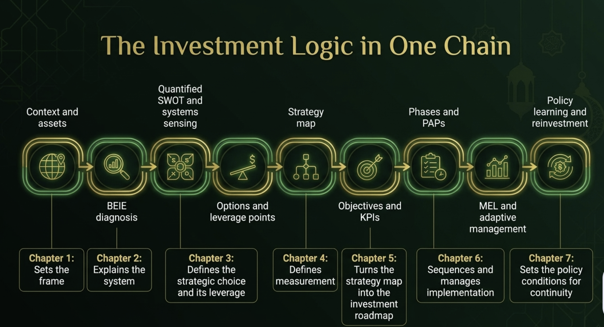

The Emerging Bangsamoro: A Hub for Resilient and Ethical Growth
Bangsamoro Investment Roadmap Development (BIRD) 2026–2035
© 2026 Bureau of Investments, Ministry of Trade, Investments and Tourism (MTIT), BARMM. All rights reserved, subject to the permissions stated below.
This publication is a strategic planning and investment-coordination document prepared to inform institutional review, investment programming and public discussion. Unless a separate licence is formally authorised by the publisher, no part may be reproduced for commercial distribution without prior written permission. Quotation and non-commercial use for research, education and public policy discussion are permitted where lawful, provided that the source is acknowledged and the meaning is not misrepresented. Any official adoption, budget allocation, investment approval or regulatory effect remains subject to the competent authority and applicable law.
Suggested citation
Silva, A. M. (2026). The Emerging Bangsamoro: A Hub for Resilient and Ethical Growth. Bangsamoro Investment Roadmap Development 2026–2035. Bureau of Investments, Ministry of Trade, Investments and Tourism, BARMM.
ISBN: not assigned. Publication status: strategic planning report for institutional review and validation. Figures marked as proposed, indicative or provisional are not approved appropriations, confirmed investments or adopted government targets.
Acknowledgements
The Bangsamoro Investment Roadmap Development (BIRD) 2026–2035 has been shaped by analytical work, institutional knowledge, technical exchange and the perspectives of people and organisations working across the Bangsamoro economy. The roadmap is offered as a shared planning resource: its value depends on the continued stewardship, validation and implementation of the institutions and communities it is intended to serve.
Appreciation is extended to the leadership of the Bangsamoro Autonomous Region in Muslim Mindanao (BARMM) and the Ministry of Trade, Investments and Tourism (MTIT) for providing the institutional setting for investment strategy and coordination. Particular recognition is due to the Bureau of Investments team for its investment-facilitation mandate, working knowledge of the investor environment and continued engagement with the roadmap’s strategic and operational questions.
The work also acknowledges the contributions of officials, technical personnel and practitioners across BARMM ministries, offices and agencies; provincial, city and municipal local government executives and teams; national government agencies; statistical and planning institutions; chambers of commerce, business associations, investors and entrepreneurs; MSMEs and producer organisations; development agencies and financing partners; universities, researchers and training institutions; civil society organisations; and community representatives. Their respective perspectives help connect regional ambition with the practical realities of service delivery, enterprise development, infrastructure, finance, market access, environmental stewardship and inclusive growth.
Gratitude is extended to participants in the structured workshops and consultations convened at regional, provincial, local and sectoral levels. Their discussions and critical reflections have helped test assumptions, surface implementation barriers and highlight the interdependencies that a systems-led roadmap must address. The contribution of the BIRD Validation Survey participants is also acknowledged. The survey provides diagnostic and validation evidence; it is not treated as a population-representative vote or a replacement for authoritative administrative and statistical baselines.
Engr. Addie T. Unsi is recognised for contributing as a facilitator and technical contributor to the roadmap process, helping structure dialogue and support the integration of stakeholder perspectives. The report’s preparation and systems architecture were led by Alvin M. Silva, MDM, consultant and systems architect. These acknowledgements recognise meaningful participation without implying that every individual or institution endorses each finding, target or recommendation.
The roadmap is strongest when regional leadership, local knowledge, responsible investment and community aspirations are brought together through transparent decisions, shared learning and sustained implementation.
Messages
Messages
Messages
Table of Contents
Preliminary pages and executive summary
Select any preliminary page, executive-summary section or chapter heading to navigate directly. Chapter subheadings link to their corresponding anchor in the published chapter files.
Executive Summary sections
Chapters
Table of Contents
List of Abbreviations
| Abbreviation | Full term |
|---|---|
| ADB | Asian Development Bank |
| ASEAN | Association of Southeast Asian Nations |
| BARMM | Bangsamoro Autonomous Region in Muslim Mindanao |
| BEGMP | Bangsamoro e-Governance Master Plan |
| BEIE | Bangsamoro Economic and Investment Ecosystem |
| BEZA | Bangsamoro Economic Zone Authority |
| BHB | Bangsamoro Halal Board |
| BHIDP | Bangsamoro Halal Industry Development Plan |
| BIF-Net | Bangsamoro Investment Facilitation Network |
| BIMP-EAGA | Brunei Darussalam–Indonesia–Malaysia–Philippines East ASEAN Growth Area |
| BIRD | Bangsamoro Investment Roadmap Development |
| BMOA | Bangsamoro ministries, offices and agencies |
| BMSMED | Bangsamoro MSME Development Plan |
| BOI / MTIT | Bureau of Investments, within the Ministry of Trade, Investments and Tourism (MTIT), BARMM |
| BPDA | Bangsamoro Planning and Development Authority |
| BPLS | Business Permits and Licensing System |
| BSC | Balanced Scorecard |
| BSEMP | Bangsamoro Sustainable Energy Master Plan |
| BSP | Bangko Sentral ng Pilipinas |
| BTDP | Bangsamoro Tourism Development Plan |
| CARD | Centre for Agriculture and Rural Development (CARD Islamic Bank) |
| CLP / LP | Critical Leverage Point (LP1 to LP5) |
| CMO / OCM | Office of the Chief Minister |
| CREATE MORE | Corporate Recovery and Tax Incentives for Enterprises to Maximize Opportunities for Reinvigorating the Economy Act (RA 12066) |
| DICT | Department of Information and Communications Technology |
| DOE | Department of Energy |
| DPWH | Department of Public Works and Highways |
List of Abbreviations
| Abbreviation | Full term |
|---|---|
| DRR | Disaster risk reduction |
| ESG | Environmental, social and governance |
| F1–F6 | Financial perspective objectives |
| FDI | Foreign direct investment |
| FLEMMS | Functional Literacy, Education and Mass Media Survey |
| GCC | Gulf Cooperation Council |
| GEMS | Green Economy Monetization Strategy |
| GRDP | Gross regional domestic product |
| HEDS | Halal Economy Dominance Strategy |
| IEDS | Integrated Ecosystem Development Strategy |
| IFES | Infrastructure-First Enabling Strategy |
| IPs | Indigenous Peoples |
| IsDB | Islamic Development Bank |
| JMC | Joint Memorandum Circular |
| KPI | Key performance indicator |
| L1–L7 | Learning and Growth perspective objectives |
| LGU | Local government unit |
| MAFAR | Ministry of Agriculture, Fisheries and Agrarian Reform |
| MBHTE | Ministry of Basic, Higher and Technical Education |
| MEL | Monitoring, evaluation and learning |
| MENRE | Ministry of Environment, Natural Resources and Energy |
| MFBM | Ministry of Finance and Budget Management |
| MICT | Ministry of Information and Communications Technology |
| MILG | Ministry of the Interior and Local Government |
| MOLE | Ministry of Labour and Employment |
| MPW | Ministry of Public Works |
| MRA | Mutual recognition agreement |
| MSME | Micro, small and medium enterprise |
List of Abbreviations
| Abbreviation | Full term |
|---|---|
| MTIT | Ministry of Trade, Investments and Tourism |
| MYIP | Multi-year investment plan |
| NEDA | National Economic and Development Authority (reorganised in 2025 as the Department of Economy, Planning, and Development) |
| NGO | Non-governmental organisation |
| ODA | Official development assistance |
| OIC | Organisation of Islamic Cooperation |
| P1–P7 | Internal Process perspective objectives |
| PAP | Programme, activity and project |
| PDP | Philippine Development Plan |
| PES | Payment for ecosystem services |
| PIFO | Provincial Investment Facilitation Office |
| PPP | Public–private partnership |
| PSA | Philippine Statistics Authority |
| QA | Quality assurance |
| REDD+ | Reducing Emissions from Deforestation and Forest Degradation |
| S1–S7 | Stakeholder perspective objectives |
| SDG | Sustainable Development Goal |
| SGA | Special Geographic Area |
| SIPP | Strategic Investment Priority Plan |
| SMIIC | Standards and Metrology Institute for the Islamic Countries |
| SPDA | Southern Philippines Development Authority |
| TESDA | Technical Education and Skills Development Authority |
| TOWS | Threats, opportunities, weaknesses and strengths matrix |
| TVET | Technical and vocational education and training |
| UAE | United Arab Emirates |
| ZBIP | Zamboanga–Basilan Interconnection Project |
Glossary of Terms
Glossary of Terms
Executive Summary
From investment potential to shared prosperity
The Bangsamoro Investment Roadmap Development (BIRD) 2026–2035 sets out a coordinated strategy to help BARMM turn its human, cultural, natural and geographic strengths into productive investment, decent work and resilient communities. It matters now because the region must convert the gains of peace and autonomy into durable economic opportunity while addressing poverty, weak connectivity, infrastructure gaps, limited market access and fragmented investment-enabling systems.
BARMM is uniquely positioned to build value across halal products and services, agro-industrial production, the green economy, tourism, trade and Islamic finance. Its location within the Brunei Darussalam–Indonesia–Malaysia–Philippines East ASEAN Growth Area (BIMP-EAGA) provides a platform for wider regional connections—provided that logistics, skills, standards, finance and institutions develop together. BIRD therefore recommends an ecosystem approach rather than isolated sector initiatives.
The roadmap is a strategic and coordination framework, not an approved budget or a guarantee of results. It links the diagnosis in Chapter 2, the Integrated Ecosystem Development Strategy (IEDS) selected in Chapter 3, the calibrated measures in Chapter 4, the Balanced Scorecard (BSC) in Chapter 5, implementation in Chapter 6 and policy recommendations in Chapter 7. Its promise depends on accountable leadership, responsible investment, community participation and transparent, evidence-led execution.
At a glance
| Decision area | What the report establishes | What leaders and institutions need to do |
|---|---|---|
| Strategy | IEDS provides the strongest integrated response to the system-wide constraints. | Align sector, infrastructure, finance, market-access and governance actions to common priorities. |
| Performance | Four BSC perspectives and a calibrated KPI architecture connect capability, process, stakeholder value and economic results. | Assign KPI owners; validate baselines, targets, methods and data sources. |
| Investment | ₱120–160 billion in public catalytic capital is an indicative planning envelope. | Confirm fiscal space, financing sources, safeguards, feasibility and approvals project by project. |
| Delivery | Three phases sequence enabling conditions, scale-up and consolidation. | Gate later-phase investment on readiness, evidence of demand and performance reviews. |
| Governance | BIF-Net is proposed as a coordination and facilitation network, not a replacement for statutory mandates. | Harmonise the legal and institutional model and publish clear decision rights. |
The Development Challenge
Opportunities and constraints must be addressed together
Chapter 2 frames BARMM’s investment economy as five connected clusters: Foundations, Transformers, Enablers, Connectors and Financiers. The system has real assets—young people, agriculture and fisheries, halal enterprise potential, renewable and natural resources, tourism and strategic regional location—but benefits are constrained when infrastructure, standards, market access, finance, skills and public-sector coordination do not develop in step.
Connect regional strengths to investable, inclusive growth
People and enterprise
Opportunity: a youthful population, entrepreneurs, MSMEs and producer communities can deepen local value chains.
Risk: skills, productivity, access to finance and decent-work pathways may not keep pace with labour-force growth.
Halal economy
Opportunity: build trusted halal value chains, services, certification and market access rooted in Bangsamoro identity and enterprise.
Risk: fragmented standards, limited conformity-assessment capacity and weak traceability could constrain market recognition.
Location and connectivity
Opportunity: deepen trade, logistics, tourism and business links through BIMP-EAGA and wider regional corridors.
Risk: ports, roads, inter-island links, energy reliability and digital connectivity raise costs and limit dependable access.
Natural assets and green value
Opportunity: raise value in agriculture, fisheries, forestry, renewable energy and eligible ecosystem services.
Risk: climate hazards, ecosystem degradation, weak project preparation and uncertain revenue pathways threaten returns.
Investment climate
Opportunity: clearer facilitation, aftercare, investment intelligence and ethical governance can improve confidence.
Risk: fragmented responsibilities, administrative barriers, uncertain readiness and limited coordination slow conversion from interest to operating investment.
Poverty and inclusion
Opportunity: value-chain investment can expand jobs, household income and market participation across provinces and communities.
Risk: poverty, market-access limitations and territorial disparities can prevent growth from becoming broad-based.
What the diagnostics imply
Chapter 2’s systems diagnostics caution against treating each constraint in isolation. Enablers—including infrastructure, energy, digital systems, skills and service delivery—are critical because they influence the performance of the other clusters. The report’s survey analysis found institutional readiness to be the lowest of three assessed dimensions in each of the six survey clusters. This is diagnostic survey evidence, not a substitute for formal agency capacity assessments.
Evidence basis: Chapter 2 diagnostics and the BIRD Validation Survey (3–20 August 2026; 76 consented responses). Survey results should be read in light of the sample’s composition and geographic coverage; they are not population-representative estimates.
Strategic Options
Four choices were assessed; an integrated approach ranked first
Chapter 3 assessed four strategic options. Each offers a useful emphasis, but the decision was which approach could address the connected constraints of BARMM’s investment ecosystem rather than improve one sector while leaving binding dependencies unresolved.
| Rank | Option | Analytical score | Strategic contribution | Main limitation if used alone |
|---|---|---|---|---|
| 1 | IEDS Integrated Ecosystem Development Strategy | 8.83 / 10 | Synchronises production, infrastructure, finance, standards, market access, governance and institutional capability. | Requires strong coordination, sequencing and performance discipline. |
| 2 | HEDS Halal Economy Dominance Strategy | 7.53 / 10 | Builds distinctive halal value chains, standards, certification and market positioning. | Needs wider enabling infrastructure, finance, skills and market systems. |
| 3 | IFES Infrastructure-First Enabling Strategy | 7.46 / 10 | Addresses connectivity, energy and core enabling infrastructure. | Infrastructure alone does not guarantee productive use, enterprise growth or market demand. |
| 4 | GEMS Green Economy Monetisation Strategy | 7.16 / 10 | Develops eligible green-economy and ecosystem-service revenue opportunities. | Depends on legal, technical, environmental, financing and buyer/registry conditions. |
Scores reproduce the analytical comparison in the BIRD planning materials. They are decision-support assessments, not measured economic outcomes. HEDS, IFES and GEMS remain strategic engines within the integrated approach.
Why IEDS was selected
Critical leverage points
- Halal certification integrity: build credible standards, conformity assessment and traceability.
- Infrastructure, energy and connectivity: reduce the costs and uncertainty that constrain productive activity.
- Governance and investor confidence: clarify decision rights, publish service standards and improve aftercare.
- Islamic finance ecosystem: connect Shariah-compliant financing and risk-sharing to viable enterprise and investment needs.
- Green-economy revenue: pursue lawful and technically credible mechanisms with environmental safeguards and fair benefit-sharing.
BSC: Strategy and Investment Roadmap
The Balanced Scorecard translates IEDS into linked objectives, measures, initiatives and review routines. The causal logic runs from Learning and Growth to Internal Process, then to Stakeholder outcomes and Financial results. The four perspectives are interdependent; weights shown in Chapter 5 are proposed management weights and do not replace the definitions and validation rules in Chapter 4.
| Perspective | Strategic objective | Strategic measure / KPI | 2035 ambition in the report |
|---|---|---|---|
| Financial (30%) | Increase investment; grow the regional economy; expand exports; activate green revenue; mobilise Islamic finance | Annual investment approvals; GRDP; exports; verified green-economy revenue; Islamic banking assets | ₱15B+ annual approvals; ₱550B+ GRDP; ₱40B+ exports; ₱500M annual green revenue; ₱20B+ Islamic banking assets |
| Stakeholder (25%) | Strengthen investor experience; empower MSMEs; reduce poverty; widen access and quality employment | Investor satisfaction; valid halal certificates; poverty incidence; jobs from investment-approved firms; financial inclusion | 8.0+/10 satisfaction; 5,000+ halal-certified MSMEs; poverty below 20%; 20,000+ jobs as a roadmap-level aspiration |
| Internal Process (25%) | Streamline facilitation; strengthen certification; improve infrastructure delivery; coordinate investment readiness | Business registration time; verified certification/recognition milestones; budget execution; PAP readiness and delivery | Digital, one-day registration ambition; recognised standards pathway; budget execution above 90%; project-specific readiness gates |
| Learning and Growth (20%) | Build sector expertise; strengthen staff capability; foster digital services and institutional learning | Trained/certified staff; digital services deployed; data quality and review-cycle compliance | 100+ halal certification officers; 80% of relevant staff trained or certified; 20+ digital services, all subject to target and baseline verification |
From objectives to portfolio execution
Each strategic measure should connect to an identifiable programme, activity or project (PAP), with a responsible owner, dependencies, financing status, safeguards, timetable and verifiable milestones. The scorecard is a management tool: it supports decisions and learning but does not prove causal effects merely because indicators move together.
The BIRD Growth Strategy
The growth strategy connects the BEIE clusters and five strategic growth engines through a common investment logic: build enabling conditions, strengthen productive value chains, connect firms to finance and markets, and govern delivery through evidence and accountability. The engines reinforce one another; they are not competing standalone strategies.

Five Strategic Growth Engines
The 2035 Vision and Implementation Roadmap
The 2035 vision: prosperity that is productive, inclusive and resilient
These figures are strategic ambitions in the current report, not independently verified forecasts or adopted statutory targets. Chapter 4’s calibrated headline indicators additionally include 5,000+ halal-certified MSMEs, a household electrification ambition of 90% by 2035 and broadband connectivity of 85%, with indicator definitions and baselines subject to source-owner verification. Renewable-energy share, access to electricity and investment approvals are different measures and must not be conflated.
Three-phase implementation roadmap
Purpose: remove binding constraints and establish credible delivery conditions.
Priorities: institutional and legal coordination; verified baselines; project preparation; investor service and aftercare; halal standards readiness; priority energy, transport and digital dependencies; capability and safeguards.
Expected outcome: a validated PAP pipeline, clear ownership, reliable reporting and projects that meet documented readiness gates.
Purpose: scale investment only when enabling conditions, demand and project viability are verified.
Priorities: agro-industrial processing, halal value chains, cold chain and logistics, green-economy pilots that meet requirements, Islamic finance, export readiness and market links.
Expected outcome: more productive enterprises, better market access and measurable value addition from projects that demonstrate performance.
Purpose: deepen proven capability and embed institutional continuity.
Priorities: higher-value exports, reliable cross-border market links, institutionalised facilitation, sound green revenue pathways, financial inclusion and independent outcome review.
Expected outcome: stronger economic resilience, a more competitive investment ecosystem and a successor agenda shaped by evaluation findings.
Investment Requirements and Monitoring, Evaluation and Learning
Investment requirements: catalyse, do not overstate
The report’s ₱120–160 billion public catalytic envelope is indicative and phased at ₱35–45 billion, ₱50–65 billion and ₱35–50 billion. The wider ₱1.55–1.77 trillion requirement is derived from an assumed capital-output ratio and the report’s growth path; it is not a list of committed projects, a forecast with guaranteed returns or an approved financing package. The report’s indicative financing scenario allocates potential sources across BARMM public resources, national programmes, development and climate finance, and private, PPP and Islamic finance. Shares must only be reported as financing secured when supported by appropriations, signed agreements or documented commitments.
| Pathway | Potential contribution | Required control before counting |
|---|---|---|
| Public sector | Foundational infrastructure, institutional capability, project preparation and public goods. | Approved appropriations, fiscal-space assessment, procurement and implementation authority. |
| Private sector | Productive assets, processing, logistics, services, tourism and enterprise investment. | Documented investor commitments, feasibility, market demand and safeguards; separate approvals from realised capital. |
| Development financing | Technical assistance, concessional finance, climate and resilience funding where eligible. | Formal programme eligibility, signed financing instruments, agreed co-financing and reporting arrangements. |
| Public–private partnerships (PPPs) | Risk allocation and delivery for eligible infrastructure and service investments. | Legal authority, value-for-money and fiscal-risk assessment, procurement and contract approval. |
| Islamic finance | Shariah-compliant financing and risk-sharing for eligible enterprises and investments. | Regulatory compliance, licensed providers, commercial viability and transparent risk allocation. |
Monitoring, evaluation and learning (MEL)
MEL links strategy to implementation and institutional learning. It should report not only money spent and activities completed, but also whether the programme is removing constraints, changing service quality, increasing productive capacity and delivering outcomes. The BSC gives decision-makers a causal structure; Chapter 4 defines indicators and calibration; Chapter 6 specifies reviews and controls; Chapter 7 addresses policy and institutional continuity.
| Step | Management question | Evidence and response |
|---|---|---|
| Measure | What has changed against the approved baseline and target? | Verified KPI and PAP records, provenance, date, territory and definition. |
| Learn | What explains the change or variance? | Root-cause analysis of delivery, finance, dependency, data quality and external shocks. |
| Adapt | Which response is justified and by whom? | Options appraisal, impact on other perspectives, legal authority and stakeholder considerations. |
| Improve | Was the corrective action implemented and effective? | Named owner, due date, decision log and follow-up verification. |
| Scale | Is the intervention effective, affordable, lawful and replicable? | Evidence of outcomes, costs, safeguards and readiness before scale-up decisions. |
Illustrative review cadence in Chapter 6: monthly operational pipeline review where data allow; quarterly KPI and delivery review; twice-yearly cross-cluster and territorial review; annual performance and investment programming; a 2030 mid-term review; and a 2035 terminal evaluation.
Why This Matters
What success should look like in 2035
Success is not a single headline number. It is a Bangsamoro investment ecosystem in which enterprises can grow, public institutions can deliver, communities participate in the gains of development, and the economy becomes more diversified and resilient.

The decisions that matter now
- Confirm institutional ownership. Agree decision rights, coordination arrangements and roles for MTIT–Bureau of Investments, participating agencies and local government partners.
- Validate the evidence base. Reconcile territorial and price bases; confirm baselines, definitions, source owners and target approval status.
- Prepare bankable investments. Prioritise feasibility, demand, finance, safeguards, resilience, local value creation and implementation capacity.
- Sequence public catalytic support. Make later releases contingent on readiness and verified performance, with transparent records of funding status.
- Review and learn publicly. Publish progress, limitations, corrective action and evaluation findings to sustain trust and improve the next decisions.
The ambition for 2035 is a Bangsamoro where ethical leadership, responsible investment and local ingenuity reinforce one another—where growth is not only larger, but more inclusive, more resilient and more widely shared.
Read the full report
Continue with Chapter 1, then Chapters 2–7 for the full analytical and implementation basis.
Introduction — Background, Purpose, Anchors and Methodology
A. Background and Rationale: From Post-Conflict Recovery to Investment Destination
The Bangsamoro Autonomous Region in Muslim Mindanao (BARMM) was formally established on 26 February 2019, following the ratification of the Bangsamoro Organic Law (Republic Act No. 11054, 2018) in the plebiscite held earlier that year. The region is more than an administrative reorganisation. It is a political settlement that seeks to turn decades of armed conflict into a durable framework for self-governance, cultural affirmation and economic self-determination.
The region enters the roadmap period with clear evidence of progress and of continuing constraints. On the first-semester measure, poverty incidence among families fell from 55.9 percent in 2018 to 34.8 percent in 2023 (PSA, 2023). On the full-year measure, it fell from 28.0 percent in 2021 to 23.5 percent in 2023, still among the highest of all regions (PSA, 2024). The improvement is substantial, but poverty remains a central development constraint.
The economy is growing again after a slow 2024. Gross Regional Domestic Product (GRDP) grew 2.7 percent in 2024, after 4.3 percent in 2023. In 2024, services accounted for 42.0 percent of GRDP; agriculture, forestry and fishing for 32.4 percent; and industry for 25.6 percent (PSA-RSSO BARMM, 2025). Growth then accelerated to 5.0 percent in 2025, the sixth fastest of the country's 18 regions (MindaNews, 2026). This structure means that value addition, infrastructure, market access, human capital and finance have to be considered together rather than as separate sector programmes.
Investment activity is also rising. Investment approvals reached ₱5.1 billion in the first four months of 2026 (BBOI, 2026). Approvals, however, are not the same as realised capital formation or broad investor confidence. BIRD therefore treats investor confidence as an outcome to be measured through administrative and market indicators, not inferred from a single approval figure.
Provincial trajectories differ. Lanao del Sur was the fastest-growing province in 2023, at 5.02 percent, and grew 4.0 percent in 2024, supported by the SPDA Agro-Industrial Development Programme and anchor investments such as DoleFil's ₱306 million pineapple facility. Maguindanao del Norte grew fastest in 2024, at 4.1 percent, on the strength of a services-led economy and growing industrial capacity (MFBM, 2025). Basilan was declared free of the Abu Sayyaf Group on 9 June 2025, a milestone that improves the conditions for normal investment activity (PIA, 2025).
The Bangsamoro Investment Roadmap Development (BIRD) 2026–2035 is MTIT's ten-year strategic framework for investment-led, inclusive and sustainable economic transformation. It builds on the region's productive assets and institutional context: agriculture and fisheries, halal identity and enterprise, a strategic position in BIMP-EAGA, renewable-energy resources, cultural assets, human capital and emerging Islamic finance. The roadmap does not assume that comparative advantage automatically becomes investment advantage. It focuses on the enabling conditions, linkages and execution capabilities needed to turn assets into investable opportunities and broad-based economic outcomes.
B. Scope, Coverage and Temporal Horizon
B.1 Geographic Scope
The roadmap covers BARMM as now constituted: five provinces (Lanao del Sur, Maguindanao del Norte, Maguindanao del Sur, Basilan excluding Isabela City, and Tawi-Tawi), the Special Geographic Area (SGA) and Cotabato City. Sulu has been outside BARMM since the Supreme Court decision of 9 September 2024 (Supreme Court of the Philippines, 2024). Cotabato City, the regional seat of government and the main commercial centre, is treated as a distinct urban node. Each province is profiled through the Bangsamoro Economic and Investment Ecosystem (BEIE) Framework to analyse sectoral linkages and identify priority investment corridors.
B.2 Sectoral Coverage
The roadmap addresses six priority investment sectors, the same six used in the stakeholder workshops, together with the green economy as an emerging cross-cutting pillar. Each is mapped to the BEIE Framework's five functional clusters.
| Priority sector | BEIE cluster | Key investment areas |
|---|---|---|
| Agro-industry | Foundations → Transformers | Rice, corn, coconut, rubber and seaweed processing; cold chain; farm-to-market linkages |
| Halal economy | Transformers | Halal processing, certification and testing; halal parks; export market linkages |
| Tourism and cultural economy | Connectors | Halal tourism, cultural heritage, eco-tourism, Lake Lanao |
| Energy and utilities | Foundations / Enablers | Renewable generation, Zamboanga–Basilan interconnection, island mini-grids, household electrification |
| Infrastructure, logistics and connectivity | Enablers | Farm-to-market roads, ports, digital broadband, BIMP-EAGA corridors |
| Services (health, education, finance, digital) | Enablers / Financiers | Human capital, Islamic finance, e-governance, digital literacy |
| Green economy (cross-cutting pillar) | Foundations / cross-cutting | Carbon credits, payments for ecosystem services, REDD+, sustainable forestry, eco-tourism fees |
B.3 Temporal Scope and Three-Phase Architecture
The roadmap spans 2026–2035 in three implementation phases, sequenced by investment readiness and system dependencies. The indicative public catalytic envelope is ₱120–160 billion across the decade. The Integrated Ecosystem Development Strategy (IEDS) connects the strategic options and sets the implementation sequence. All amounts remain subject to project readiness, financing, safeguards, feasibility and annual budget decisions.

| Phase | Period | Envelope | Strategic focus | Key deliverables |
|---|---|---|---|---|
| Phase 1: Foundation Building | 2026–2028 | ₱35–45B | Governance and enablers | Enact the Forestry Code and sign JMC No. 2026-01; operationalise the halal certification authority with OIC/SMIIC-aligned processes; launch one-day digital business registration; advance the Zamboanga–Basilan interconnection; fund farm-to-market roads; establish BIF-Net and its coordination protocols |
| Phase 2: Acceleration | 2029–2031 | ₱50–65B | Transformers and green economy | Operationalise the Bangsamoro Halal Park; register REDD+ and activate payments for ecosystem services; extend Islamic banking to all provincial capitals; deploy cold-chain and logistics hubs; scale TVET–industry alignment; raise functional literacy towards 70 percent |
| Phase 3: Consolidation and Global Integration | 2032–2035 | ₱35–50B | Connectors and ecosystem maturity | Secure OIC endorsement and an SMIIC mutual recognition arrangement; reach ₱500M+ annual green revenue; deepen BIMP-EAGA integration; reach ₱550B+ GRDP and poverty below 20 percent; 90 percent household electrification (100 percent by 2040) and 85 percent broadband coverage |
C. Purpose of the Investment Roadmap Development
The BIRD 2026–2035 translates the Bangsamoro Government's investment-promotion mandate into a coherent, evidence-informed roadmap. It connects policy, investment facilitation, sector development, infrastructure, finance, market access and implementation governance, so that individual projects contribute to a functioning investment ecosystem. The roadmap is a decision and coordination framework. It does not replace project feasibility studies, statutory approvals, annual appropriations or agency mandates.
The roadmap serves five related purposes:
1. Integrated analytical framework. Provide a research-based, policy-oriented framework that combines provincial insight, global trends, workshop outputs and multi-sector analysis, kept ecosystem-based by the BEIE Framework and Strat Planner Pro.
2. Evidence-based strategic guidance. Guide policymakers, planners and investors over the decade with strategies grounded in verified PSA-BARMM data, stakeholder evidence and international benchmarks (OIC/SMIIC, ESG, PDP 2023–2028).
3. High-leverage opportunity identification. Identify the investment opportunities and interventions where a small change at the right point produces a large, system-wide effect (Meadows, 1999).
4. Measurable target architecture. Set measurable targets and monitoring mechanisms aligned with international standards, national priorities and Bangsamoro objectives, operated through the Balanced Scorecard and the MEL Dashboard.
5. Synchronised ecosystem development. Replace scattered, siloed interventions with synchronised development, using TOWS and systems archetypes so that strategies reinforce one another across clusters.
D. Guiding Principles
Six guiding principles shape analysis, strategy, implementation and learning. They work as operating rules for investment facilitation and public decision-making. Where they carry measurable indicators, targets remain subject to baseline verification and periodic calibration.
| Principle | Operational definition | Application in BIRD | KPI target (2035) |
|---|---|---|---|
| Moral Governance | Transparency, accountability and Islamic ethics as the operating system | Public disclosure; investor ombudsman; anti-corruption safeguards | 100% procurement disclosure |
| Ecosystem Thinking | Interconnected clusters, not isolated silos | BEIE Framework; inter-cluster linkage mapping | All projects cluster-tagged |
| Cultural Authenticity | Halal, Islamic finance and heritage as competitive advantages | Halal certification; Islamic finance; cultural tourism | 5,000+ halal-certified MSMEs |
| Environmental Stewardship | Green economy as opportunity, not compliance cost | Forestry Code; REDD+; PES; carbon markets | ₱500M+ green revenue |
| Inclusivity | Equitable benefit-sharing across all segments | MSME programmes; focus on IDPs, women and youth; anchor linkages | <20% poverty; 60% MSME participation |
| Data-Driven Decision-Making | Verified data and stakeholder evidence | PSA integration; workshop synthesis; KPI benchmarking | Quarterly dashboard updates |
E. Regulatory and Policy Anchors
The BIRD 2026–2035 operates within a legal and policy framework that spans three tiers: national legislation, BARMM-specific instruments, and regional and international frameworks. These anchors align the roadmap with national priorities, international standards and the region's autonomous governance structure.
E.1 National Legislation and Issuances
Bangsamoro Organic Law (Republic Act No. 11054, 2018). The BOL establishes BARMM's autonomous government and directs it to promote investment and create a favourable climate for business in the region (Article XIII, Section 24). It provides the legal basis for region-specific policies on investment facilitation, halal development and economic zones, within the Constitution and applicable national laws.
CREATE MORE Act (Republic Act No. 12066, 2024). CREATE MORE sets the national fiscal incentive framework that applies to registered enterprises in BARMM: income tax holidays, the special corporate income tax, the enhanced deductions regime, duty and VAT incentives, and the RBE local tax. Its enhanced deductions for research and development, training, power and domestic inputs directly support the Enablers and Transformers clusters.
2026 Strategic Investment Priority Plan (Memorandum Order No. 47). The SIPP defines the activities eligible for incentives nationwide. It includes area-specific priority activities for BARMM, namely halal tourism and investment operations of Islamic banks under RA 11439 (Office of the President, 2026). Widening this BARMM list is a policy objective of the roadmap (Chapter 7).
Islamic Banking Law (Republic Act No. 11439, 2019). The law provides the framework for Islamic banks and Shariah-compliant financial services. The Bangko Sentral ng Pilipinas licences and supervises Islamic banks; the Bangsamoro Government's role is to build demand, project pipelines, Shariah-governance capacity and public-sector use of Islamic instruments.
Republic Act No. 11550 (2021). The law divided the former Maguindanao province into Maguindanao del Norte and Maguindanao del Sur, enabling province-specific investment strategies.
E.2 BARMM-Specific Legal and Policy Instruments
2nd Bangsamoro Development Plan (BDP) 2023–2028. The BDP sets medium-term development priorities and sectoral targets. It is the primary planning document that the BIRD operationalises through investment facilitation strategies (BPDA, 2023).
Bangsamoro Investment Code (draft). The draft Code, as of 22 April 2026, sets out the regional framework for investment incentives, the roles of investment promotion agencies, an investment development council and non-fiscal support (MTIT, 2026a). Its harmonisation with CREATE MORE and with BIF-Net is addressed in Chapter 7.
Proposed Executive Order on the Bangsamoro Investment Facilitation Network (BIF-Net). The proposed order establishes BIF-Net as the inter-agency investment facilitation framework and creates a Regional Green Lane for Strategic Investments, with MTIT-BoI as permanent secretariat (Office of the Chief Minister, 2026).
Bangsamoro Halal Industry Development Plan (BHIDP) 2025–2030. The BHIDP sets the strategy for the halal ecosystem, certification infrastructure and export market linkages (MTIT-BARMM, 2025). It is the primary operational plan for halal investment in the Transformers cluster.
Bangsamoro Sustainable Energy Master Plan (BSEMP). The BSEMP reports a renewable share of generation of 75.86 percent and sets the pathways for renewable development, grid connection and electrification (MENRE-BARMM, 2024). It anchors energy investments in the Foundations and Enablers clusters.
Bangsamoro Forestry Code (pending). The Code was pending before the interim Parliament's Committee on Environment, Natural Resources and Energy; its enactment now rests with the first elected Parliament. It will set the legal basis for sustainable resource use, value-added forest products and access to environmental markets, including REDD+ and payments for ecosystem services.
Draft MENRE–MILG Joint Memorandum Circular No. 2026-01. The draft circular, for signature, sets frameworks for carbon credit programmes, payments for ecosystem services and eco-tourism user fees as revenue mechanisms for local governments and communities. Its adoption is a Chapter 7 recommendation.
E.3 Regional and International Frameworks
BIMP-EAGA EGL Sub-Committee Strategic Plan 2025–2028. The Brunei Darussalam–Indonesia–Malaysia–Philippines East ASEAN Growth Area (BIMP-EAGA) Environment, Green Economy and Land Use plan provides a regional framework for green economy integration and cross-border trade (BIMP-EAGA, 2024). Tawi-Tawi's proximity to Sabah and the SGA's position on the central Mindanao corridor give BARMM natural trade advantages within the growth area.
Philippine Development Plan (PDP) 2023–2028. The PDP sets national priorities and indicators against which BARMM's contribution is aligned and monitored (NEDA, 2023).
OIC/SMIIC standards. The Standards and Metrology Institute for Islamic Countries (SMIIC) provides the main international framework for halal standards and for the accreditation of halal certification bodies, guiding BARMM's certification infrastructure and market-access strategy (SMIIC, 2021).
ASEAN Economic Community Strategic Plan 2026–2030. Adopted in May 2025 under the ASEAN Community Vision 2045, the plan succeeds the AEC Blueprint 2025 as the regional integration framework that BARMM engages through BIMP-EAGA (ASEAN, 2025).
UN Sustainable Development Goals. The SDGs inform the roadmap's inclusive growth strategies, particularly Goals 1 (no poverty), 8 (decent work and economic growth), 9 (industry, innovation and infrastructure) and 13 (climate action).
| Framework | Tier | Relevance to BIRD | Status (October 2026) |
|---|---|---|---|
| Bangsamoro Organic Law (RA 11054) | National | Autonomous governance and investment mandate | Enacted |
| CREATE MORE Act (RA 12066) | National | Fiscal incentive framework | Enacted |
| 2026 SIPP (MO No. 47) | National | Incentive-eligible activities; BARMM-specific list | In force |
| Islamic Banking Law (RA 11439) | National | Shariah-compliant finance framework | Enacted; BSP-regulated |
| Division of Maguindanao (RA 11550) | National | Province-specific planning | Enacted |
| 2nd BDP 2023–2028 | BARMM | Medium-term development priorities | Approved |
| Bangsamoro Investment Code | BARMM | Incentives and facilitation mechanisms | Draft (22 April 2026) |
| Proposed BIF-Net Executive Order | BARMM | Inter-agency facilitation; Regional Green Lane | Draft (2026) |
| BHIDP 2025–2030 | BARMM | Halal ecosystem and export strategy | Approved |
| BSEMP | BARMM | Renewable energy and electrification pathways | Approved |
| Bangsamoro Forestry Code | BARMM | Sustainable resource use and carbon markets | Pending |
| MENRE–MILG JMC No. 2026-01 | BARMM | Carbon credits, PES, eco-tourism fees | Draft; for signature |
| BIMP-EAGA EGL Plan 2025–2028 | Regional | Cross-border trade and green economy | Regional plan |
| PDP 2023–2028 | National | National development alignment | National plan |
| OIC/SMIIC standards | International | Halal standards and accreditation | International standard |
| AEC Strategic Plan 2026–2030 | Regional | ASEAN economic integration | Adopted 2025 |
| UN SDGs | Global | Inclusive and sustainable growth | Global framework |
Status reflects the documents in the BIRD evidence base. Bills not enacted by the interim Parliament should be confirmed with the Parliament Secretariat for refiling requirements.
F. Analytical Frameworks and Methodology
The BIRD 2026–2035 uses two complementary analytical frameworks, the Bangsamoro Economic and Investment Ecosystem (BEIE) Framework and the Strat Planner Pro Architecture, to provide methodological rigour, systems-level analysis and actionable outputs. This section introduces both frameworks, the five-step methodology that integrates them, and the stakeholder process that supplied much of the evidence.
F.1 The Bangsamoro Economic and Investment Ecosystem (BEIE) Framework
The BEIE Framework moves investment analysis away from isolated sectoral silos towards an integrated view of how economic clusters interact and reinforce one another. Grounded in systems-based economic theory, it organises BARMM's economy into five functional clusters, anchored by moral governance and supported by four cross-cutting enablers: tourism and culture, peace and security, human capital, and environmental sustainability (Silva, 2026a).

The framework's core insight, that BARMM's sectors are deeply interconnected and that treating them in isolation wastes effort and opportunity, is a governance imperative as much as an analytical finding. The five clusters are set out in Figure 1-3 and Table 1-5.

| Cluster | Key components | Key actors | Strategic function |
|---|---|---|---|
| Cross-cutting operating systems | Moral governance, resilience, inclusivity, peace | Bangsamoro Parliament, OCM, MILG, MPOS, civil society, development partners | Determine whether all clusters function effectively, equitably and sustainably |
| C1: Foundations | Agriculture, fisheries, forestry, energy, environment | MAFAR, MENRE, SPDA, LGUs, producer organisations | Resource base supplying inputs to all other clusters |
| C2: Transformers | Industry, manufacturing, logistics, halal processing | MTIT, BBOI, BEZA, halal certification authority, anchor investors | Value-adding transformation of Foundation resources |
| C3: Enablers | Infrastructure, health, education, human capital | MPW, MOTC, MBHTE, MOH, MICT | Physical, digital and human infrastructure that makes value creation viable |
| C4: Connectors | Tourism, digital connectivity, trade, BIMP-EAGA | MTIT, BEZA, MOTC, MICT, BIMP-EAGA partners | Market access and regional and global integration |
| C5: Financiers | Islamic banking, takaful, waqf, microfinance | MFBM, Al-Amanah Islamic Investment Bank, BSP (regulator), IsDB, cooperatives | Capital access aligned with Shariah principles |
F.2 The Strat Planner Pro Architecture
The Strat Planner Pro Architecture (Silva, 2026b) provides the planning and roadmapping architecture for the BIRD 2026–2035. It integrates five analytical layers, namely SWOT analysis, systems thinking and mapping, the strategy matrix, metrics and KPI benchmarking, and the Balanced Scorecard, so that diagnosis becomes measurable, time-bound implementation.
Tool 1: SWOT analysis with quantified indices. Strengths, weaknesses, opportunities and threats are identified with stakeholder attribution and variable classification, then scored with a distinct formula for each quadrant (see Chapter 2 for the full diagnostic).
• RIStrengths = (Impact × Likelihood) / 5 — scale 0.2–5, resilience capacity
• RIOpportunities = √(Impact × Likelihood) — scale 1–5, resilience through exploitation
• RiskWeaknesses = Impact × Likelihood — scale 1–25, internal risk exposure
• VIThreats = (Impact² × Likelihood) / 25 — scale 0.04–5, external vulnerability
Tool 2: Systems thinking and systems mapping. Causal loop diagrams map reinforcing and balancing feedback loops. Systems archetype analysis identifies recurring patterns such as Limits to Growth, Fixes that Fail, Shifting the Burden and Tragedy of the Commons that determine where intervention has the most leverage (Senge, 1990; see Chapter 2).
Tool 3: Strategy matrix (TOWS). The TOWS matrix matches internal strengths and weaknesses with external opportunities and threats to generate SO, WO, ST and WT strategies. Each strategic option is evaluated with a seven-criteria weighted scoring matrix (see Chapter 3).

Tool 4: Metrics benchmarking and KPI calibration. Strategic objectives are translated into KPIs with baselines, targets and data sources, benchmarked against international standards (OIC/SMIIC, ESG, SDGs), national targets (PDP 2023–2028) and Bangsamoro objectives (see Chapter 4).
Tool 5: Balanced Scorecard (BSC). The BSC translates strategy into measurable outcomes across four perspectives (Financial, Stakeholder, Internal Process, and Learning and Growth), linking capability investments to economic and inclusion outcomes. The scorecard is developed in Chapter 5; implementation, annual programming and MEL in Chapter 6; and policy and institutional recommendations in Chapter 7.
F.3 Five-Step Methodology for Strategy Formulation
The BIRD 2026–2035 applies a five-step methodology that integrates the BEIE Framework and the Strat Planner Pro Architecture. Each step builds on the previous one, so that the analysis is rigorous, stakeholder-informed and systems-aware.
| Step | Analytical activity | Core tools | Primary output | Chapter |
|---|---|---|---|---|
| 1. Context and ecosystem diagnosis | Establish the economic, institutional, demographic, environmental and spatial context; map the five BEIE clusters. | BEIE Framework; PEDSET context analysis; provincial profiles; stakeholder evidence | Context diagnosis and BEIE cluster architecture | 2 |
| 2. Quantified SWOT and systems mapping | Quantify strengths, weaknesses, opportunities and threats; test causal relationships and recurring patterns; identify leverage points. | Canonical SWOT formulas; CLDs; systems archetypes; Meadows leverage points | Cluster diagnostics, systems maps and leverage-point implications | 2 |
| 3. Strategy formulation and sequencing | Translate diagnostics into TOWS strategies, strategic options and a phased investment sequence using a documented decision aid. | TOWS; seven-criteria decision aid; BEIE dependencies; phasing logic | Strategic options, leverage architecture and roadmap sequencing | 3 |
| 4. Metrics and KPI calibration | Define indicators, baselines, targets, data owners and variance rules; separate verified baselines from analytical or stakeholder-derived assumptions. | KPI framework; benchmark alignment; calibration governance; MEL logic | Calibrated KPI architecture and monitoring rules | 4 |
| 5. Execution, implementation and policy feedback | Translate strategy into causal objectives, implementation actions, annual investment programming and policy recommendations, with feedback into planning cycles. | BSC; causal pathways; PAPs; MEL; BIF-Net coordination; policy review | Scorecard, implementation system, annual action plan and policy agenda | 5–7 |
F.4 Stakeholder Engagement and Workshop Process
The BIRD 2026–2035 was built from the ground up. It started with regional working sessions, moved through the provinces, and was then checked through a region-wide validation survey. At each stage the Strat Planner Pro Framework's participatory data-collection method guided the work. Participants did not only comment on a draft: they wrote the problem statements, opportunities, priorities and pathways that the roadmap analyses. The process ran in four stages (Figure 1-6).
20 June 2026 · Isabela CityLanao del Sur and Basilan; BEIE cluster conversations
Stage 1: Regional workshops (January–February 2026)
Two rounds of regional workshops brought together representatives of Bangsamoro ministries, offices and agencies (BMOAs), the private sector (small and medium enterprises and major businesses) and development partners. Working in sector groups, participants applied five Strat Planner Pro tools in sequence to six investment sectors: agro-industry, halal, tourism, energy and utilities, infrastructure, and services. Each tool took the previous tool's output as its input (Table 1-7).
| Workshop | Guiding question | What participants produced |
|---|---|---|
| 1. Sectoral challenges | What holds investment back in each sector, and why? | Problem statements (what, where, who), effects on the sector, root causes and supporting evidence |
| 2. Sectoral opportunities | How can each challenge become an opportunity for joint action? | Opportunity and investment areas, possible programmes, partner institutions and time horizons |
| 3. Opportunity prioritisation | Which opportunities should come first? | Opportunities placed on an impact-and-feasibility matrix (Do first, Plan and advocate, Nice to have, Park), with the top three to five presented in plenary and justified by impact and feasibility |
| 4. Industry SWOT | What are each industry's strengths, weaknesses, opportunities and threats? | A structured SWOT for each sector |
| 5. Industry strategy | What is the pathway from today's situation to the desired outcome? | A description of the current situation, three sequenced milestones and expected outcomes for each sector |
Stage 2: Mainland provincial workshop, Cotabato City (24 March 2026)
The process then moved to the provinces. On 24 March 2026, a workshop in Cotabato City brought together BMOAs, local government units (LGUs) and private-sector participants from Maguindanao del Norte, Maguindanao del Sur and the Special Geographic Area (SGA). It used the same participatory method to test the regional findings against provincial conditions.
Stage 3: Provincial workshops with BEIE cluster conversations (May–June 2026)
On 12 May 2026, a provincial workshop for Lanao del Sur was held in Marawi City. On 20 June 2026, a workshop for Basilan followed the same design. It was held in Isabela City, which lies outside BARMM, and the discussion covered the BARMM part of the province. Both sessions strengthened the method in two ways:
- discussion was organised around the clusters of the Bangsamoro Economic and Investment Ecosystem (BEIE), so participants looked at how sectors depend on one another rather than treating each in isolation;
- each workshop started from a prepared Provincial Economic and Investment Outlook, which gave participants a shared base of data and context before they began (MTIT, 2026b).
Both workshops drew a wide range of government, LGU and private-sector stakeholders.
Stage 4: Validation survey (3–20 August 2026)
The BIRD Validation Survey tested the workshop findings and the roadmap's draft logic with a wider audience. All 76 responses carry final consent under the Data Privacy Act of 2012. No responses came from Basilan or Tawi-Tawi. Basilan is covered by its June workshop, and Tawi-Tawi by secondary data until its workshop results are integrated (BIRD Validation Survey, 2026).
From participation to analysis
The planning team synthesised the workshop outputs and survey responses through the Strat Planner Pro architecture:
- quantified SWOT scoring;
- causal loop diagrams and systems archetypes;
- leverage-point analysis;
- the TOWS strategy matrix;
- the Balanced Scorecard.
The team then formulated the four strategic options and scored them against seven weighted criteria, which led to the recommended Integrated Ecosystem Development Strategy (IEDS). Findings were cross-checked against PSA-BARMM data, the provincial economic and investment outlooks, and relevant national and international benchmarks.
The roadmap therefore combines three kinds of evidence: official statistics, stakeholder evidence and systems analysis. Each is kept distinct. Where evidence is incomplete or may change, the roadmap marks the item for baseline verification, feasibility assessment or later calibration rather than presenting an assumption as fact.
Video resources
URL: https://youtu.be/UCi2dVUmSbE
Duration: about 15 minutes
Description: An overview of the BIRD 2026–2035 strategic vision, covering the BEIE Framework, the five analytical tools, the phased implementation architecture and the call to action for investors and development partners.
URL: https://youtu.be/Li7lpyWWMcE
Duration: about 12 minutes
Description: A closer look at the BEIE context-analysis method, explaining how the five functional clusters interact and how the cross-cutting operating systems determine ecosystem performance.
References
ASEAN. (2025). ASEAN Economic Community strategic plan 2026–2030. ASEAN Secretariat. https://asean.org/wp-content/uploads/2025/05/07.-AEC-Strategic-Plan-2026-2030_adopted.pdf
Bangsamoro Board of Investments. (2026). Investment approvals reach ₱5.1 billion in the first four months of 2026 [Press release]. Bangsamoro Government. https://bangsamoro.gov.ph
Bangsamoro Planning and Development Authority. (2023). 2nd Bangsamoro Development Plan 2023–2028. Bangsamoro Government. https://knowledge.bpda.bangsamoro.gov.ph
BIMP-EAGA. (2024). Environment, Green Economy and Land Use (EGL) Sub-Committee strategic plan 2025–2028. BIMP-EAGA Facilitation Centre.
BIRD Validation Survey. (2026). Consented responses, 3–20 August 2026 (n = 76) [Data set]. BOI-MTIT and AS Strategic Insights.
Bureau of Investments–Ministry of Trade, Investments and Tourism. (2026). BIRD 2026–2035 workshop records: Regional and provincial workshops, January–June 2026 [Unpublished workshop outputs]. Bangsamoro Government.
Meadows, D. H. (1999). Leverage points: Places to intervene in a system. Sustainability Institute.
MindaNews. (2026, April 24). Mindanao average economic growth rate in 2025 above national rate. https://mindanews.com/business/2026/04/mindanao-average-economic-growth-rate-in-2025-above-national-rate/
Ministry of Environment, Natural Resources and Energy–BARMM. (2024). Bangsamoro Sustainable Energy Master Plan. MENRE-BARMM.
Ministry of Finance and Budget Management–BARMM. (2025). BARMM provincial economic trends: A provincial breakdown of growth and challenges (Economic Brief No. 1, Series of 2025). MFBM.
Ministry of Trade, Investments and Tourism–BARMM. (2025). Bangsamoro Halal Industry Development Plan 2025–2030. MTIT-BARMM.
Ministry of Trade, Investments and Tourism–BARMM. (2026a). Draft Bangsamoro Investments and Incentives Code (as of 22 April 2026). MTIT Bureau of Investments.
Ministry of Trade, Investments and Tourism–BARMM. (2026b). Provincial economic and investment outlooks: Basilan, Lanao del Sur, Maguindanao del Norte, Maguindanao del Sur and Tawi-Tawi. MTIT Bureau of Investments.
National Economic and Development Authority. (2023). Philippine Development Plan 2023–2028. NEDA.
Office of the Chief Minister–BARMM. (2026). Proposed Executive Order establishing the Bangsamoro Investment Facilitation Network (BIF-Net) and the Regional Green Lane for Strategic Investments [Draft].
Office of the President of the Philippines. (2026). Memorandum Order No. 47: Approving the 2026 Strategic Investment Priority Plan.
Philippine Information Agency. (2025, June 10). Basilan declared ASG-free; Pillar of Peace marker unveiled. https://pia.gov.ph
Philippine Statistics Authority. (2023). Preliminary 2023 first semester official poverty statistics of the Philippines. https://psa.gov.ph
Philippine Statistics Authority. (2024). 2023 full year official poverty statistics. https://psa.gov.ph
Philippine Statistics Authority–RSSO BARMM. (2025). BARMM's economy expands by 2.7 percent in 2024 (Reference No. 2025-033). https://rssobarmm.psa.gov.ph
Republic Act No. 11054. (2018). Organic Law for the Bangsamoro Autonomous Region in Muslim Mindanao. Congress of the Philippines.
Republic Act No. 11439. (2019). An Act Providing for the Regulation and Organisation of Islamic Banks. Congress of the Philippines.
Republic Act No. 11550. (2021). An Act Dividing the Province of Maguindanao into Two Provinces, Namely: Maguindanao del Norte and Maguindanao del Sur. Congress of the Philippines.
Republic Act No. 12066. (2024). Corporate Recovery and Tax Incentives for Enterprises to Maximize Opportunities for Reinvigorating the Economy (CREATE MORE) Act. Congress of the Philippines.
Senge, P. M. (1990). The fifth discipline: The art and practice of the learning organisation. Doubleday.
Silva, A. M. (2026a). Bangsamoro Investment Roadmap Development (BIRD) 2026–2035: Analytical architecture and strategic planning materials. AS Strategic Insights.
Silva, A. M. (2026b). Strat Planner Pro user manual. AS Strategic Insights. https://asilvainnovations.github.io/strat-planner-pwa/user-manual.html
Standards and Metrology Institute for Islamic Countries. (2021). Strategic plan 2021–2030. Organisation of Islamic Cooperation.
Supreme Court of the Philippines. (2024, September 9). Province of Sulu v. Medialdea, G.R. No. 242255.
Strategic Alignment with the Integrated Ecosystem Development Strategy
The Integrated Ecosystem Development Strategy (IEDS), recommended in Chapter 3, operationalises a synchronized, cluster-integrated investment pathway that treats economic growth as a function of interdependent systems rather than isolated sectoral outputs. Consequently, the metrics and Key Performance Indicator (KPI) framework for the Bangsamoro Investment Roadmap Development (BIRD) 2026–2035 must transcend traditional siloed monitoring. It must measure cross-cluster synchronization, governance operating system health, and the conversion of foundational endowments into export-ready, culturally authentic, and environmentally sustainable value (Silva, 2026; Kaplan & Norton, 1992).
This chapter establishes a calibrated, evidence-based benchmarking architecture anchored in BARMM's master plans, regulatory frameworks, and international standards. Each KPI is phased to align with the IEDS implementation timeline: Phase 1: Foundation Building (2026–2028), Phase 2: Acceleration (2029–2031), and Phase 3: Consolidation & Global Integration (2032–2035). The framework ensures that progress is measurable, comparable, and adaptive, enabling policymakers, development planners, and investors to track systemic transformation rather than incremental activity. For continuity with the draft series, many tables retain 2030 as an interim checkpoint; the formal end-of-phase gates are 2028, 2031 and 2035. Where a 2031 value is not yet defined, it must be calibrated and approved rather than interpolated silently.
The KPI framework is designed to feed directly into the Balanced Scorecard (Chapter 5), which organises metrics across four causal perspectives: Financial, Stakeholder, Internal Process, and Learning & Growth. This chapter provides the what and how much of measurement; Chapter 5 provides the why and so what by linking each KPI to strategic objectives and causal pathways. Together, Chapters 4 and 5 form the measurement and management engine of the BIRD 2026–2035 (Kaplan & Norton, 1996; Silva, 2026).
KPI Architecture and Calibration Methodology
The KPI register is calibrated against the IEDS sequence and organised by indicator definition, unit, source owner, reference period, disaggregation, reporting frequency, verification status and phase milestone. SMART criteria are applied alongside data-quality and feasibility tests. The source draft proposes three portfolio dimensions—cross-cutting operating-system metrics (30%), cluster-specific metrics (45%) and benchmark alignment (25%). These percentages are proposed management weights, not externally validated measures of causal contribution. They may be used for a composite only after each constituent indicator has a documented direction of improvement, normalisation rule, missing-data policy and approval record. Until then, dashboards should show raw indicators and their status separately.
B.1 Four Calibration Tiers
| Calibration Tier | Time Horizon | Strategic Focus | Strategy Phase Alignment | Data Verification Mechanism |
|---|---|---|---|---|
| Baseline | 2024-2025 | Diagnostic anchoring and gap identification | Pre-implementation | PSA-BARMM; MFBM Economic Briefs; Ministry Administrative Reports |
| Phase 1 gate | 2028 | Baseline confirmation, governance foundations, enabler deployment and readiness review | Phase 1: Foundation Building (2026–2028) | Approved definitions; source-owner-verified administrative records; audit and project-readiness evidence |
| Phase 2 gate | 2031 (2030 retained as interim checkpoint) | Value-chain acceleration, scale-up, export readiness and financing mobilisation | Phase 2: Acceleration (2029–2031) | Source-owner-verified administrative, sector, finance and outcome series; project-readiness and safeguards review |
| Phase 3 gate | 2035 | Consolidation, resilience, competitiveness and global integration | Phase 3: Consolidation & Global Integration (2032–2035) | Published official statistics, audited administrative records, verified investment and trade data, applicable accreditation evidence |
| Post-roadmap watch | Beyond 2035 | Long-term energy security and human-capital outcomes | Outside the BIRD 2026–2035 performance period | Retained only as a contextual outlook; not included in the 2035 composite |
B.1a KPI Calculation and Dashboard Metric Dictionary
Every indicator displayed in a MEL dashboard or Balanced Scorecard (BSC) perspective must have a version-controlled metric specification. The table below defines the common calculations; indicator-specific numerator, denominator, unit, disaggregation and exclusions must be recorded in the KPI register before publication.
| Metric / BSC use | Calculation | Interpretation and control |
|---|---|---|
| Percentage / rate | (Eligible cases meeting the stated condition ÷ all eligible cases in the defined population and period) × 100 | Publish numerator, denominator, population, reference period and exclusions. Never treat missing records as zero. |
| Annual investment approvals (₱) | Sum of the approved value of distinct projects formally approved during the reporting year | Separate approvals from commitments, actual capital expenditure, disbursements and operational projects. Deduplicate projects; disclose whether cancelled or amended approvals are netted off. |
| GRDP and GRDP growth | GRDP is the official PSA series; annual growth = ((current-year GRDP ÷ previous-year GRDP) − 1) × 100 | Use the same price basis and published vintage across comparisons. Do not splice current-price and constant-price series or treat planning targets as observed data. |
| Exports / product or sector value | Sum the value of eligible exports within the defined product, origin, destination and reporting-period scope | Record currency, valuation basis, product classification, data owner and revision date. Avoid adding subcategories already included in total exports. |
| Count / cumulative reach | Count unique eligible entities or people meeting the indicator definition by the cut-off date | Use persistent IDs and deduplication. Distinguish annual flow from active stock, cumulative reach and currently active entities. |
| Completion / execution rate | For budget execution: eligible expenditure ÷ approved allotment or other explicitly chosen official denominator × 100. For physical completion: independently verified completed units ÷ planned units × 100. | Do not combine financial execution with physical delivery. Define denominator, cut-off date, treatment of variations and source system. |
| Average processing time | Sum of elapsed calendar or working days for completed eligible cases ÷ number of completed eligible cases | State whether calendar or working days; publish median and percentile values where feasible; disclose open cases and paused-clock rules. |
| Survey / satisfaction score | Documented scoring rule applied to valid responses; publish valid n, scale, question wording, weighting and uncertainty where appropriate | Survey diagnostics are not administrative baselines. A consented sample of 76 responses does not automatically represent the whole investor or business population. |
| Provincial disparity (percentage-point spread) | Maximum provincial value − minimum provincial value for the same indicator, year and method | Use a consistent geography and population. Show province-level values and missing geographies; do not use percentage change when the intended measure is a percentage-point spread. |
| Composite BSC / portfolio score | Only after approval: weighted sum of directionally aligned, normalised and quality-checked indicator scores, using the approved weights and coverage rules | Publish normalisation method, bounds, weights, indicator coverage, treatment of missing values and sensitivity checks. Do not silently redistribute weights when data are missing. |
| Target achievement / gap to target | For a higher-is-better indicator: actual ÷ target × 100. For a lower-is-better indicator: target ÷ actual × 100, where meaningful and actual is non-zero. | Use only for compatible units and periods. For zero, negative, bounded or non-ratio metrics, show the absolute gap or a purpose-designed rule instead. |
The calibration architecture ensures that KPIs remain responsive to IEDS synchronization requirements. Cross-cluster metrics are prioritised to prevent siloed progress from masking systemic bottlenecks. For example, tracking halal certification processing speed (Transformers cluster) in isolation would miss its direct influence on export volume (Connectors cluster) and investor retention (Stakeholder perspective). The framework explicitly maps these interdependencies, ensuring that lagging indicators in one cluster trigger diagnostic attention in connected clusters (Silva, 2026).
B.2 The Six Pareto KPIs
For executive monitoring, the BIRD framework uses six Pareto-style headline KPIs as a compact management shortlist. They should not be interpreted as a statistically established claim that exactly 80% of IEDS impact is caused by six variables; they provide a high-signal navigation layer that complements the full KPI register. These KPIs are tracked in real-time through the BIF-Net/MEL dashboard (proposed operating model) and serve as the primary navigational instruments for strategy execution. Each Pareto KPI is linked to specific Leverage Points (LP1-LP5) and Systems Archetypes, enabling rapid identification of intervention points when deviations occur (Silva, 2026).

| # | KPI | Baseline (2024) | 2028 Gate | 2030 Checkpoint | 2035 Target | Primary CLPs | Data Source |
|---|---|---|---|---|---|---|---|
| 1 | Annual Investment Approvals (₱B) | ₱5.1B | ₱6.5B | ₱10B | ₱15B+ | LP1 + LP3 | MTIT–Bureau of Investments administrative investment-approval records (subject to source-owner verification) |
| 2 | BARMM GRDP (₱B) | ₱299.5B | ₱385B | ₱440B | ₱550B+ | LP1 + LP2 | PSA-BARMM quarterly |
| 3 | Total Export Value (₱B) | <₱10B | ₱20B | ₱26B | ₱40B+ | LP1 | PSA-BARMM trade data |
| 4 | Halal-Certified MSMEs | ~500 | 1,500 | 3,000 | 5,000+ | LP1 | BHB certification logs |
| 5 | Electrification Rate (%) | Baseline requires source-owner verification | Proposed milestone; confirm after baseline | Proposed milestone; confirm after baseline | Proposed milestone; confirm after baseline | LP2 | DOE/MPW field data |
| 6 | Broadband Connectivity (%) | <30% | 58% | 70% | 85% | LP2 | DICT/MICT surveys |

To prevent the "Fixes that Fail" systems archetype, the BIRD framework employs adaptive recalibration: incentives and resource releases are conditional on enabler capacity meeting production demand thresholds. If a KPI deviates >15% from its approved trajectory, the following protocol activates:
Step 1: Alert through the dashboard only after the relevant data connector and notification rule have been tested.
Step 2: Cross-cluster diagnostic — is the deviation caused by internal cluster failure or upstream/downstream dependency?
Step 3: Leverage-point diagnosis — which of the five CLPs and relevant BSC objectives addresses the root cause?
Step 4: Trigger-based intervention — recommend resequencing, corrective action or escalation to the legally responsible decision-maker; funding changes require the applicable approval process.
Cross-Cutting Operating Systems Metrics
The IEDS positions Moral Governance, Resilience, Inclusivity, and Peace as the operational backbone of economic transformation. KPIs in this dimension measure institutional health, adaptive capacity, equitable participation, and security-investment alignment. The draft assigns these cross-cutting metrics a proposed 30% portfolio weight because they function as systemic multipliers — improvements in governance transparency, climate resilience, social inclusion, and peace directly amplify performance across all five BEIE clusters (Silva, 2026; OCM-BARMM, 2020).
C.1 Moral Governance
Moral Governance, anchored in the Bangsamoro Moral Governance Framework 2020-2035 (OCM-BARMM, 2020), is the operating system that determines whether all other clusters function effectively. The framework operationalises Islamic ethics (khalifa stewardship), transparency, and accountability as foundational governance principles. KPIs in this dimension track the institutionalization of these principles across BARMM government operations (Silva, 2026).
| KPI | Baseline (2024) | 2028 Gate | 2030 Checkpoint | 2035 Target | Lead Agency | Policy Anchor |
|---|---|---|---|---|---|---|
| Public financial disclosure compliance rate | ~65% (est.) | 80% | 95% | 100% | OCM-BARMM | BMGF 2020-2035 |
| Investor ombudsman operationalisation | Not established | Established | Fully functional | 8.0+/10 satisfaction | MTIT–Bureau of Investments | BIC; BEGMP 2025–2030 |
| Digital procurement and licensing adoption | <30% | 70% | 90% | 100% | MFBM / DICT | BEGMP 2025–2030 |
| Budget execution rate | <80% | 85% | 88% | >90% | MFBM | BDP 2023–2028 |
| Inter-agency coordination score | ~5.5/10 | 6.5/10 | 7.5/10 | 8/10 | BDP / Bangsamoro Corp | BDP / MOA framework |
The budget execution rate KPI is particularly critical because it captures the absorptive capacity constraint that has historically undermined BARMM's development. At less than 80% execution, BARMM effectively leaves 20%+ of allocated funds unspent — a pattern that constitutes both fiscal waste and lost development opportunity. The 2035 target of >90% requires systematic reform of procurement processes, human resource deployment, and inter-agency coordination. Provincial variation is significant: Maguindanao del Norte (administrative centre) likely exceeds 85% execution, while the SGA (8 newly created municipalities) may execute below 60% due to capacity constraints. The BEGMP digital platform provides real-time tracking of budget execution at provincial and municipal levels, enabling targeted capacity-building interventions (MFBM, 2025; BDP, 2023).
C.2 Resilience
Resilience metrics capture BARMM's capacity to absorb, adapt to, and recover from climate shocks, economic disruptions, and security incidents. The climate resilience dimension is particularly urgent: El Nino-induced crop losses of ₱346 million in Maguindanao del Sur (2024) and Pestalotiopsis disease infestation of 800+ hectares of rubber plantations demonstrate the vulnerability of the agricultural base that supports 32.4% of BARMM's GRDP (MENRE-BARMM, 2024; PSA-RSSO BARMM, 2025).
| KPI | Baseline (2024) | 2028 Gate | 2030 Checkpoint | 2035 Target | Lead Agency | Policy Anchor |
|---|---|---|---|---|---|---|
| Climate-risk screening coverage for major projects | 0% | 60% | 85% | 100% | MENRE | Climate Resilience Master Plan 2024–2035 |
| Regional resilience index operationalisation | Not developed | Pilot deployed | Fully integrated | standardised reporting | MENRE / BPDA | Food, Water & Energy Security Framework 2025–2035 |
| Early warning system coverage (provinces) | 2 (est.) | 4 | 5 | Coverage of all currently applicable and formally recognised jurisdictions (verify denominator) | MENRE / OCD | Climate Resilience Master Plan |
| Climate-takaful products deployed | 0 | 2 | 5 | 10+ | MFBM / Al-Amanah | Climate Resilience Master Plan |
C.3 Inclusivity
Inclusivity metrics ensure that economic growth translates into equitable benefit distribution across provinces, genders, age groups, and marginalized communities. With poverty incidence at 34.8% (nationally highest), functional literacy at 59.3% (vs. 91.6% national), and significant provincial disparities (Maguindanao del Sur at 53% vs. Lanao del Sur at 31.5%), inclusivity is not merely a social objective but an economic imperative — inclusive growth generates larger markets, more productive workforces, and more stable communities (PSA, 2024; PSA-RSSO BARMM, 2024).
| KPI | Baseline (2024) | 2028 Gate | 2030 Checkpoint | 2035 Target | Lead Agency | Policy Anchor |
|---|---|---|---|---|---|---|
| MSME participation in priority value chains | <35% | 50% | >60% | >75% | MTIT-ETD / MOLE | BIDP 2025–2035 |
| Gender-balanced employment in registered firms | ~42% | 48% | 50% | 50%+ | MOLE / BWC | BIDP 2025–2035; SDG 5 |
| Functional literacy rate (ages 10+) | 59.3% | 68% | 72% | 75%+ | DepEd-BARMM / TESDA | BDP 2023–2028 |
| Provincial growth disparity (max-min pp) | 3.9 pp | <2.5 pp | <2.0 pp | <1.5 pp | BPDA / MFBM | BDP 2023–2028; IEDS equity targets |
| Women-led enterprises supported | TBD | TBD | 2,000 | 10,000 | BWC / MTIT | BIDP 2025–2035; SDG 5 |
| Youth-led enterprises supported | TBD | TBD | 1,500 | 7,500 | BYC / MTIT | BIDP 2025–2035 |
| IDP resettlement/return rate | <50% | 80% | 100% | 100% (subject to an agreed eligibility denominator) | OPAPRU-BARMM | BPDP 2024–2035; Normalization Plan |
C.4 Peace and Security
Peace and security metrics capture the intersection of conflict dynamics and investment climate. BARMM's post-conflict context — including Basilan's ASG-free declaration (June 2024), the Marawi rehabilitation (₱15B+), and ongoing normalization of former combatants — requires KPIs that track both security outcomes and their translation into investor confidence (OPAPRU, 2024; PIA, 2025).
| KPI | Baseline (2024) | 2028 Gate | 2030 Checkpoint | 2035 Target | Lead Agency | Policy Anchor |
|---|---|---|---|---|---|---|
| Decommissioned combatant reintegration rate | ~62% | 80% | 100% | Sustained >95% | OPAPRU-BARMM | BPDP 2024–2035; Normalization Plan |
| Annual reduction in rido/conflict incidents | Baseline year | >10% cumulative | >15% cumulative | >20% cumulative | MPOS / BTA | Community-Led Peacebuilding Framework |
| Investor perception improvement index | Baseline survey | +10% cumulative | +15% cumulative | +25% cumulative | MTIT–Bureau of Investments / relevant peace-and-governance data owners | Narrative Management Framework |
| Security-incident-free investment zones | 2 (est.) | 4 | 6 | All economic zones | MPOS / MTIT–Bureau of Investments (coordination) | Security-Investment Dashboard |
Investor perception may be tested as a leading indicator of investment approvals, but a 6–12 month lag and any correlation coefficients must not be treated as established until the underlying dataset, sample, instrument, period and statistical method are documented and independently reproduced. The latest linked validation survey contains 76 consented responses under analyticsVersion 2; that diagnostic sample alone does not establish official investor satisfaction or validate causal effects. Chapter 5 therefore treats pathways from process quality and peace-and-security conditions to investment outcomes as hypotheses for repeated measurement, not as proven causal relationships.
==================== SECTION D ====================Cluster-Specific Performance Indicators
Cluster KPIs are calibrated to measure throughput, value addition, market access, and financial channeling. Each indicator is explicitly linked to IEDS synchronization requirements and master plan milestones. The draft assigns these metrics a proposed 45% portfolio weight and are organised around the five BEIE clusters: Foundations (agriculture, fisheries, forestry, energy, environment), Transformers (industry, manufacturing, logistics, halal, tourism, MSMEs), Enablers (infrastructure, digital, health, education, human capital), Connectors (trade, exports, BIMP-EAGA, digital trade), and Financiers (Islamic banking, takaful, microfinance, waqf) (Silva, 2026).
D.1 Foundations Cluster
The Foundations Cluster captures BARMM's natural resource endowments — agriculture (32.4% of GRDP), fisheries, forestry, and renewable energy (75.86% mix). KPIs in this cluster measure productivity gains, post-harvest loss reduction, cooperative strengthening, renewable energy expansion, and environmental conservation. Provincial data integration is essential because each province specializes in different commodities: Basilan (rubber, 48,366 ha, 69,392 MT), Tawi-Tawi (seaweed, 40% national output), Lanao del Sur (pineapple, corn, Lake Lanao fisheries), and Maguindanao del Sur (rice, corn, coconut) (PSA-RSSO BARMM, 2024; MAFAR, 2025).
| KPI | Baseline (2024) | 2028 Gate | 2030 Checkpoint | 2035 Target | Policy Anchor |
|---|---|---|---|---|---|
| Priority crop yield increase (rice, corn, rubber, seaweed) | Baseline | +10% | +13% | +15% | MAFAR Agro-Industrial programmes |
| Post-harvest loss reduction | 20-40% | 25% | 30% | 30%+ | MAFAR / MPW cold chain mandate |
| Farmer/fisher cooperative strengthening | ~300 | 400 | 450 | 500+ | MAFAR extension / SPDA corridor |
| Renewable energy mix share | Verify definition and source | Proposed milestone | Proposed milestone | Proposed milestone | BSEMP 2025–2035 |
| Household electrification rate | Source-owner verification required | Proposed milestone; confirm after baseline | Proposed milestone; confirm after baseline | Proposed milestone; confirm after baseline | BSEMP / DOE grid projects |
| ZBIP completion / Mindanao grid integration | Under construction | 80% complete | Operational | Fully integrated | BSEMP / DOE |
| REDD+ programme operationalisation | Not registered | Baseline audit | Registered / verified | Revenue generating | Forestry Code / MENRE-MILG JMC 2026-01 |
| NTFP enterprise revenue generation | Minimal | ₱50M | ₱100M | ₱150M+ | Forestry Code / Community forestry |
| Net forest cover increase | Baseline | +4% | +7% | +10% | BIMP-EAGA EGL / Forestry Code |
The post-harvest loss reduction KPI illustrates the cross-cluster dependency that the BIRD framework captures: reducing losses from 20-40% to 30%+ requires cold chain infrastructure (Enablers cluster), cooperative organisation (Foundations cluster), and market linkages (Connectors cluster). Basilan's 69,392 MT rubber production currently loses an estimated 25-30% value between harvest and export due to lack of processing facilities — a loss of approximately ₱400M annually that could be captured through halal-certified rubber goods manufacturing if the Transformers cluster develops concurrently (MAFAR, 2025; MTIT-BARMM, 2025).
D.2 Transformers Cluster
The Transformers Cluster measures value addition, manufacturing, and market-readiness across halal industry, tourism, MSME development, and ecozone operations. This cluster is where BARMM's foundational endowments are converted into export-ready products and services. KPIs track halal certification expansion, export value growth, tourism development, MSME formalization, and industrial locator performance (MTIT-BARMM, 2025; BEZA, 2025).
| KPI | Baseline (2024) | 2028 Gate | 2030 Checkpoint | 2035 Target | Policy Anchor |
|---|---|---|---|---|---|
| Halal-certified MSMEs | ~500 | 1,500 | 3,000 | 5,000+ | BHIDP 2025–2030 |
| BHB OIC/SMIIC accreditation status | Pending | Provisional alignment | Full accreditation | MRA signed | BHIDP / SMIIC Standards |
| Halal export value | <₱500M | ₱1.5B | ₱3B | ₱5B+ | BHIDP / MTIT export corridor |
| Annual tourist arrivals | <500K | 1M | 2M | 3M | BTDP 2024–2033 |
| Tourism infrastructure investment deployed | Baseline | ₱150M | ₱300M | ₱467.8M+ | BTDP / BEDC |
| Sustained MSME operations | Baseline | 12,000 | 16,000 | 20,000+ | BMSMED 2026–2032 |
| Digitally enabled MSMEs | <1,000 | 2,500 | 3,500 | 5,000+ | BMSMED / BEGMP |
| Ecozone investment pipeline | ₱1.35B | ₱1.6B | ₱1.8B | ₱2B+ | BEZA / PFEZ expansion |
| Industrial locators operational | ~40 | 60 | 80 | 100+ | BEZA / PPP frameworks |
The halal-certified MSME trajectory — from ~500 (2024) to 5,000+ (2035) — is the single highest-leverage Transformers KPI because each certified MSME represents: (a) a micro-enterprise with formal market access, (b) a household with increased income, (c) a node in the halal value chain, and (d) a data point in the BHB certification system. At scale, 5,000+ certified MSMEs create a self-reinforcing ecosystem where certification demand drives BHB capacity, BHB capacity drives certification quality, and certification quality drives export revenue. This is the Investment-Development Virtuous Cycle (R1) identified in Chapter 3-2 (Silva, 2026; BHIDP, 2025).
D.3 Enablers Cluster and Human Capital
The Enablers Cluster captures the physical, digital, and human infrastructure that enables all other clusters to function. This is the highest-priority cluster in IEDS Sequence A (2026-2028) because, as the systems mapping in Chapter 3-2 demonstrated, infrastructure and human capital deficits constitute the binding "Limits to Growth" constraints that stall economic transformation. The Enablers KPIs are divided into two sub-dimensions: physical/digital infrastructure and human capital development (BEGMP, 2025; TESDA-BARMM, 2025).
| KPI | Baseline (2024) | 2028 Gate | 2030 Checkpoint | 2035 Target | Policy Anchor |
|---|---|---|---|---|---|
| Government offices with broadband connectivity | <40% | 70% | 90% | 100% | BEGMP 2025–2030 |
| Civil servants trained in digital governance | <150 | 300 | 400 | 500+ | BEGMP / BDTA |
| Functional Negosyo Centres | ~60 | 80 | 90 | 100+ | BMSMED / LGU mandates |
| Entrepreneurs with digital literacy certification | Baseline | 4,000 | 7,000 | 10,000 | BMSMED / DICT |
| Inter-agency coordination score | ~5.5/10 | 6.5/10 | 7.5/10 | 8/10 | BDP / Bangsamoro Corp |
| Tourism jobs created (Isabela baseline: 2,049) | 2,049 | 3,500 | 5,000 | 8,000+ | BTDP / BEDC sub-committee |
The human capital development sub-dimension addresses BARMM's most persistent binding constraint: the lowest functional literacy rate in the Philippines (59.3% vs. 91.6% national). Human capital is the "software" that determines whether physical infrastructure investments generate returns — a road without skilled drivers is underutilized, a processing facility without trained technicians is inefficient, and a digital platform without literate users is empty. The human capital KPIs span employment, education, skills alignment, health access, and digital literacy (PSA, 2024; TESDA-BARMM, 2025; MOLE, 2025).
| Category / KPI | Baseline | 2028 Target | 2035 Target | Data Source |
|---|---|---|---|---|
| Employment and Employability | ||||
| Employment Rate | 94.2% (2022) | 95.0% | 96.0% | PSA-BARMM |
| TVET Graduate Employment Rate | 70.9% (2022) | 75.0% | 80.0% | TESDA-BARMM |
| Underemployment Rate | 10.2% (2022) | 9.0% | 7.0% | PSA-BARMM |
| Youth Employment Rate (15-30 years) | TBD | 75.0% | 80.0% | PSA-BARMM |
| Female labour Force Participation Rate | TBD | 55.0% | 60.0% | PSA-BARMM |
| Education and Training | ||||
| Functional Literacy Rate (ages 10+) | 59.3% | 68% | 75%+ | PSA FLEMMS |
| TVET Graduates in Priority Sectors | TBD | 5,000/year | 10,000/year | TESDA-BARMM |
| TVET Centres Operational | TBD | 50 | 100 | TESDA-BARMM |
| Students Enrolled in STEM programmes | TBD | 15,000 | 35,000 | DepEd-BARMM |
| Teacher-Student Ratio | TBD | 1:35 | 1:30 | DepEd-BARMM |
| Skills Alignment and Industry Demand | ||||
| Training Regulations Developed for Priority Sectors | 0 (Agriculture, Halal) | 5 TRs | 15 TRs | TESDA-BARMM |
| Heavy Equipment Operators Certified | TBD | 500/year | 1,500/year | TESDA-BARMM |
| Halal Auditors / Food Safety Officers Certified | 0 | 100 | 500 | BHB / MTIT |
| Mechanized Farming Specialists Trained | 0 | 300/year | 1,000/year | TESDA-MAFAR |
| Health Service Access | ||||
| Physician-to-Population Ratio | 1:18,500 | 1:10,000 | 1:6,000 | MOH-BARMM |
| Hospital Beds per 1,000 Population | TBD | 1.5 | 3.0 | MOH-BARMM |
| Child Stunting Prevalence (<5 years) | 45% | 35% | 20% | PSA / DOH |
| Digital Literacy and ICT Skills | ||||
| Digital Literacy Rate (Basic ICT Skills) | TBD | 40% | 70% | MICT-BARMM |
| ICT / Digital Literacy Centres Established | 0 | 50 | 100 | MICT-BARMM |
| STEM Scholarship Graduates | TBD | 500/year | 1,500/year | MOST-BARMM |
D.4 Connectors Cluster
The Connectors Cluster measures trade facilitation, export readiness, BIMP-EAGA integration, and digital trade infrastructure. This cluster becomes the priority in IEDS Sequence C (2032-2035) because market access is only valuable when production capacity (Transformers) and logistics infrastructure (Enablers) are already in place. Premature focus on Connectors without adequate Foundations, Transformers, and Enablers creates "empty corridors" — trade routes with insufficient volume to justify their cost (BIMP-EAGA, 2024; MTIT-BARMM, 2025).
| KPI | Baseline (2024) | 2028 Gate | 2030 Checkpoint | 2035 Target | Policy Anchor |
|---|---|---|---|---|---|
| BIMP-EAGA cross-border trade volume | Baseline | +20% | +35% | +50% | EGL Strategic Plan 2025-2028 |
| Halal export corridor activation (UAE/GCC) | Pipeline | Operational | ₱1B volume | ₱2B+ volume | BHIDP / MAFAR-Prime |
| Digital customs clearance adoption | <15% | 40% | 65% | 85% | BEGMP / Bureau of Customs |
| Halal hospitality and tourism facilities certified | ~20 | 50 | 100 | 200+ | BTDP / BHB |
| Provincial investment facilitation offices | 1 (Cotabato) | 3 | 5 | Coverage to be calibrated against the verified territorial and administrative baseline | BIRD Ch. 11 / proposed provincial facilitation model |
D.5 Financiers Cluster
The Financiers Cluster measures the depth and reach of Islamic banking, takaful, microfinance, and waqf instruments across BARMM. With Islamic banking assets below ₱2 billion and adult financial inclusion at approximately 38% (vs. national targets of 70%+), the Financiers cluster represents both a significant gap and a transformative opportunity. Islamic finance is uniquely aligned with BARMM's identity — Shariah-compliant instruments provide culturally appropriate financial access for Muslim communities that may avoid conventional banking for religious reasons (IsDB-ICD, 2025; BSP, 2024).
| KPI | Baseline (2024) | 2028 Gate | 2030 Checkpoint | 2035 Target | Policy Anchor |
|---|---|---|---|---|---|
| Islamic banking assets in BARMM | <₱2B | ₱8B | ₱14B | ₱20B+ | IsDB-ICD / BSP-BARMM |
| Adult financial inclusion rate | ~38% (verify) | Baseline + definition required | Baseline + definition required | Target to be set after verification | Financial Inclusion Strategy 2024-2030 |
| Islamic banking branches/outlets | ~15 | 40 | 70 | 100+ | CARD / Al-Amanah expansion |
| MSME accounts with Shariah-compliant products | <5,000 | 20,000 | 35,000 | 50,000+ | BSP / Cooperative mandates |
| Annual investment approvals (MTIT–Bureau of Investments) | ₱5.1B (Q1 2026) | ₱8B p.a. | ₱12B p.a. | ₱15B+ | SIPP 2022 / MFBM tracking |
| Waqf-managed community enterprises | ~12 | 25 | 40 | 60+ | MTIT-ETD / LGU endowment |
The existing baseline (approximately 38%) and the draft trajectory must not be compared until the indicator definitions, population, denominator, reference year and product coverage are harmonised. General formal financial inclusion and penetration of Shariah-compliant products are distinct measures. Establish and publish separate definitions and source-owner-confirmed baselines before setting numerical targets. Institutions may then report account ownership, active-use rates, geographic access and Shariah-compliant product uptake as separate indicators, avoiding denominator drift.
==================== SECTION E ====================International, National and Regional Benchmark Alignment
To ensure global competitiveness and policy coherence, BIRD KPIs are explicitly calibrated against four external benchmarking frameworks: OIC/SMIIC halal standards, ESG disclosure criteria, the Philippine Development Plan (PDP) 2023–2028, and the UN Sustainable Development Goals (SDGs). This multi-layer alignment ensures that BARMM's metrics remain investable, auditable, and comparable to ASEAN and OIC member economies — critical for attracting foreign direct investment, accessing ODA and climate finance, and securing halal market recognition (SMIIC, 2021; NEDA, 2023; UNDP, 2023).

| Benchmark Framework | Alignment Indicator | BARMM Baseline | 2030 Target | 2035 Target | Reference Standard |
|---|---|---|---|---|---|
| OIC/SMIIC Halal Standards | |||||
| OIC/SMIIC | Halal certification processing time | 45-60 days | 30 days | ≤21 days | SMIIC Strategic Plan 2021–2030; BHIDP |
| OIC/SMIIC | BHB international accreditation | 3 provisional bodies | Full OIC alignment | MRA signed | OIC/SMIIC standards |
| ESG / Climate Disclosure | |||||
| ESG | Renewable energy share | 75.86% | 82% | 85%+ | MENRE BSEMP; TCFD disclosure |
| ESG | Poverty incidence | 34.8% (1H 2023) | <25% | <20% | PSA; SDG 1; BIDP |
| ESG | Business registration time | Multiple days | 2 days | 1 day (digital) | BEGMP; Ease of Doing Business Act |
| ESG | Investor aftercare satisfaction | Not measured | 7.0/10 | 8.0+/10 | proposed MTIT–Bureau of Investments investor-aftercare protocol |
| Philippine Development Plan 2023–2028 | |||||
| PDP | GRDP growth rate | 2.7% (2024) | 5.0% p.a. | 5-6% p.a. | NEDA PDP; BDP 2023–2028 |
| PDP | MSME share to GDP | ~36% | 38% | 40% | DTI-MSMED; PDP target |
| PDP | Investment-to-GDP ratio | ~25.5% | 28% | 30% | NEDA; CREATE MORE Act alignment |
| UN Sustainable Development Goals | |||||
| SDGs | Quality education (literacy) | 59.3% | 72% | 75%+ | SDG 4; DepEd/TESDA alignment |
| SDGs | Climate action (resilience screening) | 0% | 85% | 100% | SDG 13; MENRE Climate Plan |
| SDGs | Decent work and gender parity | ~42% | 48% | 50%+ | SDG 5 & 8; MOLE mandates |
| SDGs | No poverty (incidence reduction) | 34.8% | <25% | <20% | SDG 1; PSA; BIDP |
The benchmark alignment analysis reveals strategic complementarities and potential tensions. The strongest alignment is between the SDGs and PDP — both frameworks prioritise poverty reduction, education, and inclusive growth, creating a unified national-regional policy environment. The OIC/SMIIC halal standards provide a distinctive benchmark that differentiates BARMM from other Philippine regions — no other region tracks halal certification processing time or OIC accreditation status, giving BARMM a unique positioning metric for Islamic market investors.
The ESG framework adds a global investability dimension. With international investors increasingly screening for ESG compliance, BARMM's renewable energy share (75.86%, already among the highest in the Philippines), carbon credit potential (1M+ tCO2e/year target), and climate-risk screening coverage (0% → 100%) create compelling ESG narratives for green finance and climate-focused development partners. The TCFD (Task Force on Climate-Related Financial Disclosures) alignment ensures that BARMM's climate metrics meet international reporting standards, enabling access to green bonds, climate insurance, and carbon market mechanisms (MENRE-BARMM, 2024; NEDA, 2023).
The draft proposes three weighted dimensions for a future composite score:
Cross-Cutting OS Metrics (proposed 30%): Moral Governance, Resilience, Inclusivity, Peace & Security — systemic multiplier effect on all clusters.
Cluster-Specific Throughput (proposed 45%): Foundations, Transformers, Enablers, Connectors, Financiers — direct production and service delivery.
Benchmark Alignment (proposed 25%): alignment with OIC/SMIIC, relevant ESG disclosures, PDP and SDGs — global competitiveness and investability.
Note: Weights are calibrated to prioritise ecosystem health over isolated output maximization. A province could score highly on cluster throughput while failing on inclusivity. The proposed 30% OS weight is intended to make this trade-off visible, but it does not itself prevent inequity unless the indicator normalisation, geography, missing-data rule and approval process are implemented consistently. Until these scoring rules are approved, report the dimensions separately and do not publish a single composite as an audited measure.
Home: bangsamoro-investment-roadmap.asilvainnovations.com
Validation Survey: bird-survey.asilvainnovations.com
Dashboard: bird-dashboard.asilvainnovations.com
Actors and Value Map: bird-actors-value-map.asilvainnovations.com
References
BEZA (Bangsamoro Economic Zone Authority). (2025). Ecozone Investment Pipeline Report Q1 2025. Cotabato City: Bangsamoro Autonomous Region in Muslim Mindanao.
BHDP (Bangsamoro Human Development Plan). (2025). Bangsamoro Inclusive Development Plan 2025–2035. Cotabato City: BARMM.
BHIDP (Bangsamoro Halal Industry Development Plan). (2025). Bangsamoro Halal Industry Development Plan 2025–2030. Cotabato City: Ministry of Trade, Investments and Tourism.
BIMP-EAGA Secretariat. (2024). EGL Sub-Committee Strategic Plan 2025-2028. Jakarta: ASEAN Secretariat.
BMSMED (Bangsamoro Micro, Small and Medium Enterprise Development). (2026). Bangsamoro MSME Development Plan 2026–2032. Cotabato City: MTIT-ETD.
BSEMP (Bangsamoro Sustainable Energy Master Plan). (2025). Bangsamoro Sustainable Energy Master Plan 2025–2035. Cotabato City: MENRE-BARMM.
BSP (Bangko Sentral ng Pilipinas). (2024). Financial Inclusion and Islamic Microfinance Strategy 2024-2030. Manila: BSP-BARMM Office.
BTA (Bangsamoro Transition Authority). (2024). Community-Led Peacebuilding Framework. Cotabato City: BARMM.
BPDA (Bangsamoro Planning and Development Authority). (2023). 2nd Bangsamoro Development Plan 2023–2028. Cotabato City: BARMM Government.
BPDP (Bangsamoro Peace and Development Plan). (2024). Normalization and Reintegration Plan 2024–2035. Cotabato City: OPAPRU-BARMM.
BEGMP (Bangsamoro e-Governance Master Plan). (2025). Bangsamoro e-Governance Master Plan 2025–2030. Cotabato City: MICT-BARMM.
IsDB-ICD (Islamic Development Bank — Islamic Corporation for the Development of the Private Sector). (2025). Islamic Finance Market Analysis and Regulatory Enablers for BARMM. Jeddah: IsDB Group.
Kaplan, R. S., & Norton, D. P. (1992). The balanced scorecard — Measures that drive performance. Harvard Business Review, 70(1), 71-79.
Kaplan, R. S., & Norton, D. P. (1996). The Balanced Scorecard: Translating Strategy into Action. Boston: Harvard Business Press.
MAFAR (Ministry of Agriculture, Fisheries, and Agrarian Reform). (2025). Agro-Industrial Development programmes and Commodity Roadmaps. Cotabato City: BARMM.
McKinsey & Company. (2025). Beyond ESG: From Checklists to Capabilities. McKinsey Sustainability Insights.
MENRE-BARMM (Ministry of Environment, Natural Resources, and Energy). (2024). Climate Resilience and Disaster Risk Reduction Master Plan 2024–2035. Cotabato City: BARMM.
MFBM (Ministry of Finance, Budget, and Management). (2025). BARMM Provincial Economic Trends and Fiscal Performance Tracking (Economic Brief, Issue No. 1, Series of 2025). Cotabato City: BARMM.
MICT-BARMM (Ministry of Information and Communications Technology). (2025). Bangsamoro e-Governance Master Plan (BEGMP) 2025–2030. Cotabato City: BARMM.
MOLE (Ministry of labour and Employment). (2025). Bangsamoro Inclusive Development Plan 2025–2035. Cotabato City: BARMM.
MTIT-BARMM (Ministry of Trade, Investments and Tourism). (2025). Bangsamoro Halal Industry Development Plan 2025–2030. Cotabato City: BARMM.
MTIT-BARMM. (2024). Bangsamoro Tourism Development Plan 2024–2033. Cotabato City: BARMM.
NEDA (National Economic and Development Authority). (2023). Philippine Development Plan 2023–2028. Manila: NEDA.
OCM-BARMM (Office of the Chief Minister). (2020). Bangsamoro Moral Governance Framework 2020-2035. Cotabato City: BARMM.
OPAPRU (Office of the Presidential Adviser on Peace, Reconciliation and Unity). (2024). Basilan Peace Dividend Assessment: From Conflict to Commerce, 2019-2024. Manila: OPAPRU.
PIA (Philippine Information Agency). (2025, June 10). Basilan declared ASG-free; Pillar of Peace marker unveiled. https://pia.gov.ph
PSA (Philippine Statistics Authority). (2024). 2023 First Semester Official Poverty Statistics of the Philippines. Manila: PSA.
PSA-RSSO BARMM. (2024). Provincial Accounts 2023: Gross Domestic Product by Province and Industry. Cotabato City: PSA.
PSA-RSSO BARMM. (2025). BARMM's economy expands by 2.7 percent in 2024. Cotabato City: PSA.
SILARDPH (Southeast Asian Islands Regional Research for Development Planning for Health). (2025). Regional Health Systems Analysis: Bangsamoro.
Silva, A. (2026). Bangsamoro Investment Roadmap Development (BIRD) 2026–2035: Strat Planner Pro Architecture and BEIE Framework. Asilva Innovations Strategic Insights.
Silva, A., & Unsi, M. (2026). The Emerging Bangsamoro: A Hub for Resilient and Ethical Growth — Strategic Investment Analysis Report. Asilva Innovations Strategic Insights.
SMIIC (Standards and Metrology Institute for Islamic Countries). (2021). Strategic Plan 2021–2030. Istanbul: Organisation of Islamic Cooperation.
TESDA-BARMM. (2025). Skills Assessment and Industry Alignment Report: Priority Sectors for Training Investment. Cotabato City: BARMM.
UNDP (United Nations Development Programme). (2023). Sustainable Development Goals Monitoring Framework for Autonomous Regions. Manila: UNDP Philippines.
Chapter Summary
Management role. Chapter 5 turns the Integrated Ecosystem Development Strategy (IEDS) in Chapter 3 into a manageable set of objectives, causal hypotheses, accountable actions and review routines. Chapter 4 remains the authority for KPI definitions, evidence rules, baseline qualification and calibration; Chapter 5 organises how that evidence informs decisions and execution.
Balanced Scorecard. The management design comprises 27 strategic objectives across four perspectives: Financial (30%), Stakeholder (25%), Internal Process (25%), and Learning & Growth (20%). These weights are a proposed management weighting scheme, not a substitute for indicator-level definitions or data quality checks.
Causal hypotheses. Five pathways connect capability-building and enabling processes to stakeholder value and economic outcomes. They express testable hypotheses, not proof that one intervention alone causes an observed change. Dependency, time-lag, external factors and unintended effects must be assessed at each review.
Phased execution. The three-phase roadmap in Chapter 3 provides the sequencing frame. The Phase 1 investment envelope of ₱35–45 billion is indicative and remains subject to project readiness, safeguards, financing confirmation and annual budget decisions. The ten actions below are a proposed management pipeline, not evidence of approved allocations or procurement commitments.
A. From Strategy Map to Investment Roadmap
The Balanced Scorecard (BSC), developed by Kaplan and Norton (1992, 1996), serves as a strategic management tool that translates vision and strategy into actionable objectives across four interconnected perspectives. In the context of the Bangsamoro Investment Roadmap Development (BIRD) 2026–2035, the Balanced Scorecard functions not merely as a performance measurement system but as an investment strategy roadmap that maps causal relationships between strategic objectives.
The BSC creates a strategy map that connects intangible assets — human capital, information systems and organisational culture — to intended economic and social outcomes (Kaplan & Norton, 1996). In BIRD, the GRDP, employment and poverty figures are strategic aspirations carried forward from the roadmap, not guaranteed effects of the BSC. Chapter 4 governs their definitions and calibration; formal baselines, trajectories and targets remain provisional until verified with authoritative data owners.
The BSC employs a causal hypothesis chain: Learning & Growth (enablers) → Internal Process (delivery capability) → Stakeholder (investor and community outcomes) → Financial (economic results). The proposed score weights are Financial 30%, Stakeholder 25%, Internal Process 25%, and Learning & Growth 20%. Use these weights only as a portfolio-level management convention; they do not alter Chapter 4 KPI formulas, data-quality rules, or the need to verify baseline evidence. Reviewers should test the assumed direction of causality and identify external influences, delays and possible trade-offs.
A.1 How the BIRD Chapters Fit Together
| Chapter | Role in the BIRD system | How Chapter 5 uses it |
|---|---|---|
| Chapter 2 | Context, systems mapping, strategic diagnostics and structural constraints. | Frames the problem, risks, feedback loops and hypotheses to be managed; survey diagnostics are treated as prioritisation evidence, not official baselines. |
| Chapter 3 | Integrated Ecosystem Development Strategy (IEDS), strategy clusters and phased investment direction. | Translates strategy into 27 objectives, five causal pathways, leverage-point linkages and sequenced priorities. |
| Chapter 4 | KPI dictionary, measurement definitions, calibration, baselines and evidence rules. | Remains the source of truth for KPI definitions and qualification. Chapter 5 must not create competing formulas or certify unverified targets. |
| Chapter 5 | Management and execution layer. | Assigns objectives, reviews dependencies, connects actions to indicators, convenes learning cycles and records decisions. |
| Chapter 6 | Implementation, action planning and annual investment planning. | Receives validated priorities and readiness-gated actions; budgets and milestones need formal owner and appropriation checks. |
| Chapter 7 | Policy recommendations and implementation safeguards. | Incorporates data-source verification, readiness-gated budgeting, territorial equity, investor aftercare, financing-stack discipline, legal reconciliation and risk reviews. |
A.2 Chapter Organisation
The scorecard and its management components are presented in the following sequence:
- Financial Perspective (30%) — Investment mobilisation, GRDP growth, export revenue, green economy revenue, Islamic finance assets, and foreign direct investment
- Stakeholder Perspective (25%) — Investor satisfaction, project retention, MSME certification, poverty reduction, financial inclusion, employment creation, and provincial equity
- Internal Process Perspective (25%) — Investment facilitation, permit processing, halal certification, infrastructure delivery, BMOA synchronization, green economy activation, and climate resilience
- Learning & Growth Perspective (20%) — Halal expertise, Islamic finance professionals, IPA capacity, digital innovation, functional literacy, green economy expertise, and TESDA-industry alignment
Each perspective contains strategic objectives derived from the Integrated Ecosystem Development Strategy (IEDS) in Chapter 3, with proposed measures linked to the KPI framework in Chapter 4, which remains authoritative for definitions and calibration. The chapter concludes with the Strategy Map showing causal linkages across perspectives, the Phase 1 Priority Action Plan, and BIF-Net/MEL Dashboard integration specifications.
B. Financial Perspective: Investment and Revenue Objectives
The Financial Perspective addresses how the BIRD strategy creates economic value for the Bangsamoro region. It focuses on investment mobilisation, revenue generation, and economic growth targets that demonstrate fiscal sustainability and return on investment. With a 30% proposed weight in the overall BSC score, this perspective tracks intended economic results, many of which are lagging indicators and affected by factors beyond the roadmap.
Weight: 30% of BSC Overall Score | Objectives: F1–F6 (6 strategic objectives) | Primary CLPs: LP1 (Halal Certification), LP2 (Infrastructure-Energy), LP4 (Islamic Finance)
B.1 Strategic Objectives and Measures
| Objective | Measure (KPI) | Draft baseline* | 2030 ambition* | 2035 ambition* | Strategic Initiative | CLPs |
|---|---|---|---|---|---|---|
| F1: Increase Investment Approvals | Annual investment approvals (₱B) | ₱5.1B (Q1 2026) | ₱10B p.a. | ₱15B+ p.a. | Investment promotion roadshows; BIMP-EAGA missions; investor aftercare services | LP1 LP3 |
| F2: Grow Regional Economy | BARMM GRDP (₱B) | ₱299.5B (2024) | ₱440B | ₱550B+ | BEIE ecosystem synchronization; PPP frameworks; value chain development | LP1 LP2 |
| F3: Expand Export Revenue | Annual exports from BARMM (₱B) | <₱10B (draft; verify) | ₱26B | ₱40B+ | UAE halal corridor; BIMP-EAGA trade facilitation; export readiness programmemes | LP1 |
| F4: Activate Green Economy Revenue | Carbon credit + PES revenue (₱M) | Zero | ₱100M p.a. | ₱500M p.a. | REDD+ programme registration; JMC No. 2026-01 implementation; carbon market access | LP5 |
| F5: Mobilize Islamic Finance | Islamic banking assets in BARMM (₱B) | <₱2B | ₱8B | ₱20B+ | Al-Amanah expansion; Islamic finance literacy; fintech integration | LP4 |
| F6: Attract Foreign Direct Investment | FDI approvals (₱B) | Part of total | ₱2B+ p.a. | ₱3B+ p.a. | International investor missions; PFEZ promotion; incentive optimization | LP1 LP3 |
B.2 Strategy Map Logic: Financial Perspective
The Financial Perspective objectives create an integrated value creation chain where each objective reinforces the others:
- F1 → F2: Investment approvals provide capital for GRDP growth through direct productive capacity expansion and multiplier effects
- F2 → public services: GRDP growth generates the tax base for public services and infrastructure reinvestment
- F3 → F2: Export revenue brings foreign exchange that strengthens GRDP through trade multiplier effects
- F4 → fiscal resilience: Green economy revenue diversifies revenue streams, reducing fiscal dependence on traditional sources
- F5 → F1 + MSMEs: Islamic finance channels capital to investment approvals and MSME financing
- F6 → F3: FDI brings technology transfer that enhances export competitiveness

C. Stakeholder Perspective: Investor and Community Outcomes
The Stakeholder Perspective defines the value proposition for different stakeholder groups. For BARMM, this includes investors seeking returns, MSMEs seeking market access, communities seeking inclusive development, and marginalized groups seeking empowerment. With a 25% proposed weight, this perspective tracks investor experience, enterprise capability and community outcomes.
Weight: 25% of BSC Overall Score | Objectives: S1–S7 (7 strategic objectives) | Primary CLPs: LP1 (Halal Certification), LP3 (Governance-Confidence), LP4 (Islamic Finance)
C.1 Strategic Objectives and Measures
| Objective | Measure (KPI) | Draft baseline* | 2030 ambition* | 2035 ambition* | Strategic Initiative | CLPs |
|---|---|---|---|---|---|---|
| S1: Enhance Investor Satisfaction | Investor satisfaction score (1–10) | Not measured | 7.0/10 | 8.0+/10 | Aftercare service improvement; investor ombudsman; regulatory stability | LP3 |
| S2: Retain Investment Projects | Project retention rate | Not measured | 80% | 85% | Problem resolution mechanisms; one-stop-shop; regulatory predictability | LP3 |
| S3: Empower MSMEs through Certification | MSMEs with halal certification | ~500 (draft; verify) | 3,000 | 5,000+ | BHB MSME certification programme; BHIDP implementation; capacity building | LP1 |
| S4: Reduce Poverty | Poverty incidence (BARMM) | 34.8% (2023) | <25% | <20% | Jobs-focused investment facilitation; MSME development; inclusive value chains | LP1 LP2 |
| S5: Improve Community Access to Finance | Financial inclusion rate (adults) | ~38% | 55% | 70%+ | Islamic microfinance; fintech deployment; CARD expansion; waqf activation | LP4 |
| S6: Create Quality Employment | Jobs reported by investment-approved firms | 2,029 (2025) | 10,000+ | 20,000+ | Labour-intensive sector prioritisation; skills matching; TESDA alignment | LP1 LP3 |
| S7: Ensure Provincial Equity | Inter-provincial growth disparity | 3.9 pp (2024) | <2.5 pp | <1.5 pp | Affirmative infrastructure investment; provincial facilitation offices | LP2 |
C.2 Strategy Map Logic: Stakeholder Perspective
The Stakeholder Perspective creates a value delivery chain that connects investor confidence to community welfare:
- S1 + S2 → F1: Investor satisfaction and project retention sustain investment approvals, creating a potential capital base for economic growth
- S3 + S5 → S4: MSME empowerment through halal certification and financial inclusion enable inclusive growth, directly contributing to poverty reduction
- S6 → S4: Quality employment creation directly lifts households out of poverty through wage income
- S7 → S4: Provincial equity prevents the "Success to the Successful" archetype (Silva & Unsi, 2026) by testing whether investment and outcomes are distributed equitably across the applicable territorial units
The S7 objective is particularly critical in the BARMM context. The draft cites a 3.9 percentage-point inter-provincial growth disparity for 2024. Treat this as an unverified diagnostic until its calculation, geographic coverage and data owner are confirmed; any interpretation of which provinces lag must use a consistent territorial baseline. The proposed 2035 ambition is to reduce the disparity below 1.5 percentage points. Options such as infrastructure allocation criteria and provincial facilitation support should be assessed through territorial equity analysis and adopted only through the relevant budget and governance processes.
D. Internal Process Perspective: Critical Excellence Areas
The Internal Process Perspective identifies the critical operational and management processes that enable BARMM to deliver the stakeholder value proposition and achieve financial objectives. These processes span investment facilitation, governance, infrastructure delivery, and ecosystem coordination. With a 25% proposed weight, this perspective tracks the operating processes needed to execute the strategy.
Weight: 25% of BSC Overall Score | Objectives: P1–P7 (7 strategic objectives) | Primary CLPs: LP1–LP5 (all leverage points)
D.1 Strategic Objectives and Measures
| Objective | Measure (KPI) | Draft baseline* | 2030 ambition* | 2035 ambition* | Strategic Initiative | CLPs |
|---|---|---|---|---|---|---|
| P1: Streamline Investment Facilitation | Business registration time | Multiple days | 2 days | 1 day (digital) | Digital BNR system; BEGMP e-governance; one-stop-shop expansion | LP3 |
| P2: Accelerate Permit Processing | Permit processing time | Not measured | 10 days | 7 days | One-stop shop expansion to all provinces; BPLS digitalization | LP3 |
| P3: Strengthen Halal Certification | BHB OIC/SMIIC accreditation | Pending | Provisional alignment | Full accreditation + MRA | BHB capacity building; international MRA signing; QA labs | LP1 |
| P4: Accelerate Infrastructure Delivery | Infrastructure budget execution rate | <80% | 88% | >90% | MPW–Bureau of Investments–LGU coordination; ROW resolution; PPP frameworks | LP2 |
| P5: Synchronize BMOA Programmes | Inter-agency coordination score | ~5.5/10 | 7.5/10 | 8/10 | Bangsamoro Corp institutionalization; joint M&E; MOAs | LP3 |
| P6: Activate Green Economy Programmes | JMC No. 2026-01 implementation rate | 0% | 60% | 100% | MENRE-MILG coordination; LGU capacity building; MRV systems | LP5 |
| P7: Ensure Climate Resilience | Climate-risk screening coverage | 0% | 85% | 100% | Climate-resilient design standards; early warning systems | LP2 LP5 |
D.2 Strategy Map Logic: Internal Process Perspective
The Internal Process Perspective creates an operational excellence chain that converts intangible capabilities into tangible stakeholder outcomes:
- P1 + P2 → S1: Streamlined business registration and permit processing directly enhance investor satisfaction by reducing time-to-operation
- P3 → S3 + F3: Halal certification unlocks MSME empowerment and export revenue by opening OIC/SMIIC-compliant market access
- P4 → F2: Infrastructure delivery removes binding constraints (the B1 loop ceiling identified in Chapter 2 Systems Mapping), enabling GRDP growth
- P5 → P4: BMOA synchronization prevents agency fragmentation, improving infrastructure delivery coordination
- P6 → F4: Green economy activation generates direct revenue from carbon credits and payment for ecosystem services
- P7 → F2 (protection): Climate resilience protects GRDP from climate shocks, addressing the "Fixes that Fail" archetype where unprotected infrastructure investments are lost to extreme weather events

E. Learning & Growth Perspective: Intangible Assets and Capabilities
The Learning & Growth Perspective defines the intangible assets that support value-creating internal processes. For BARMM, this includes human capital (skills and knowledge), information capital (systems and databases), and organisation capital (culture, leadership, and alignment). With a 20% weight, this foundational perspective invests in the region's capacity to execute strategy over the long term.
Weight: 20% of BSC Overall Score | Objectives: L1–L7 (7 strategic objectives) | Primary CLPs: LP1 (Halal), LP2 (Infrastructure), LP3 (Governance), LP4 (Islamic Finance)
E.1 Strategic Objectives and Measures
| Objective | Measure (KPI) | Draft baseline* | 2030 ambition* | 2035 ambition* | Strategic Initiative | CLPs |
|---|---|---|---|---|---|---|
| L1: Build Halal Expertise | Halal certification officers trained | <50 | 70 | 100+ | Halal Training Academy; BHB-SMIIC partnership; international secondments | LP1 |
| L2: Develop Islamic Finance Professionals | Islamic finance professionals in BARMM | <20 | 35 | 50+ | BSP-aligned scholarship programme; professional certification; IsDB training | LP4 |
| L3: Strengthen IPA Capacity | IPA staff with certification/training | <50% | 70% | 80% | Capacity building programmemes; Bureau of Investments capacity-development plan; performance incentives | LP3 |
| L4: Foster Digital Innovation | Digital services launched (BEGMP) | <5 | 15 | 20+ | BEGMP implementation; DICT partnership; innovation labs | LP3 |
| L5: Improve Functional Literacy | BARMM functional literacy rate | 59.3% | 72% | 75%+ | TESDA programmemes; DepEd alternative learning; adult literacy campaigns | LP1 |
| L6: Develop Green Economy Expertise | LGU staff trained on carbon/PES | 0 | 120 | 200+ | MENRE-DILG training programme; JMC implementation; carbon accounting | LP5 |
| L7: Align TESDA with Industry | Training regulations developed | 0 (priority sectors) | 5 TRs | 15 TRs | TESDA-industry councils; skills forecasting; curriculum development | LP1 LP3 |
E.2 Strategy Map Logic: Learning & Growth Perspective
The Learning & Growth Perspective creates a capability development chain that builds the human, information, and organisational capital required for operational excellence:
- L1 + L2 → P3 + F5: Halal expertise and Islamic finance professionals enable halal certification processes and expand Shariah-compliant financing
- L3 → P1 → S1: IPA capacity improves investment facilitation, enhancing investor satisfaction
- L4 → P1 + P2: Digital innovation enables streamlined business registration and permit processing
- L5 → S6: Functional literacy provides the skilled workforce foundation for quality employment creation
- L6 → P6 → F4: Green economy expertise enables green economy programme activation, generating carbon revenue
- L7 → S6: TESDA-industry alignment resolves the skills mismatch identified in Chapter 2 provincial diagnostics, enabling employment creation

F. Strategy Map: Causal Linkages Across Perspectives
The Balanced Scorecard strategy map sets out causal hypotheses across the four perspectives. It proposes that capability investments (Learning & Growth) may improve delivery processes (Internal Process), which may improve investor and community outcomes (Stakeholder), contributing to economic results (Financial). It is a learning model rather than a predictive guarantee. Reviews should test assumptions against verified evidence, track external factors and time lags, and revise or retire pathways where the evidence does not support them.
F.1 Strategy Map Architecture
The strategy map operates across four hierarchical levels:
Level 1: Learning & Growth (Foundation)
- Human Capital: L1–L7 — Halal expertise, Islamic finance professionals, IPA capacity, digital skills, literacy, green expertise, industry-aligned training
- Information Capital: Digital systems (BEGMP), databases (BHB certification logs), MRV systems for carbon accounting
- Organisation Capital: Culture of excellence under Moral Governance, leadership alignment across BMOA, institutional memory
Level 2: Internal Process (Operations)
- Investment Facilitation: P1–P2 — Business registration and permit processing
- Certification & Standards: P3 — Halal certification with OIC/SMIIC accreditation
- Infrastructure Delivery: P4 — Budget execution and project completion
- Coordination & Governance: P5–P7 — BMOA synchronization, green economy activation, climate resilience
Level 3: Stakeholder (Value Proposition)
- Investor Value: S1–S2 — Satisfaction and retention
- MSME Value: S3 — Certification and market access
- Community Value: S4–S7 — Poverty reduction, employment, financial inclusion, provincial equity
Level 4: Financial (Economic Outcomes)
- Investment Mobilization: F1, F6 — Domestic and foreign investment approvals
- Economic Growth: F2 — GRDP expansion
- Revenue Diversification: F3–F5 — Exports, green economy, Islamic finance
F.2 Five Critical Causal Pathways
The strategy map sets out five proposed causal pathways linking capability objectives to intended financial outcomes. Each pathway represents a distinct theory of change with specific CLP alignments and should be reviewed against measurable intermediate outcomes. The pathways operationalise the IEDS sequencing logic in Chapter 3: build foundations first, establish enabling conditions, scale productive transformers, strengthen connectors and financing, then consolidate results. The exact sequencing of individual projects remains subject to readiness, interdependency and financing checks.
Pathway 1: Halal Economy Value Chain
Halal expertise enables certification, which empowers MSMEs, driving halal export revenue. Primary CLP: LP1
Pathway 2: Infrastructure-Enabled Growth
IPA capacity and digital innovation enable streamlined registration and infrastructure delivery, raising investor satisfaction and driving investment-led GRDP growth. CLPs: LP2 LP3
Pathway 3: Green Economy Monetization
Green economy expertise activates carbon programmemes and climate resilience, generating green revenue that contributes to GRDP. CLP: LP5
Pathway 4: Inclusive Development
Functional literacy and TESDA alignment create quality employment and financial inclusion, reducing poverty and expanding the economic base. CLPs: LP1 LP4
Pathway 5: Islamic Finance Ecosystem
Islamic finance professionals enable Shariah-compliant certification and financial inclusion, expanding Islamic finance assets that channel capital into new investments. CLP: LP4

G. Bangsamoro Investment Facilitation Network (BIF-Net) and MEL Dashboard
The Balanced Scorecard transforms the Integrated Ecosystem Development Strategy from a conceptual framework into an executable investment roadmap. By establishing causal linkages across four perspectives, the BSC ensures that intangible investments are explicitly linked to tangible outcomes. The Bangsamoro Investment Facilitation Network (BIF-Net) and its MEL (Monitoring, Evaluation and Learning) Dashboard serve as the operational layer that tracks, visualises, and manages BSC execution in real time.
BIF-Net: Three-View Facilitation Architecture
The proposed BIF-Net may provide three role-based views. Any Supabase Row Level Security (RLS), access model, audit logging and public-data release must be implemented and security-tested before the design is described as operational:
- Operations View — Dashboard for authorised operators, with validated KPI updates, proposed variance alerts and territorial disaggregation where the underlying data permit
- Executive View — Summary for authorised decision-makers, showing trends, gaps to approved trajectories and leverage-point coverage
- Public View — Proposed, disclosure-reviewed open-data presentation with read-only access to approved investment-climate indicators
G.1 Six Pareto-Style Headline KPIs
The MEL Dashboard uses six headline KPIs as a compact management shortlist. “Pareto-style” refers only to the shortlist concept: it does not establish that these indicators account for 80% of impact or replace the complete KPI register in Chapter 4. Each KPI maps to specific BSC Financial and Stakeholder objectives and carries CLP badges for leverage point alignment:
| # | KPI | Draft baseline* | 2035 ambition* | Primary CLPs | Data Source | BSC Link |
|---|---|---|---|---|---|---|
| 1 | Annual Investment Approvals | ₱5.1B (draft; verify) | ₱15B p.a. | LP1 LP3 | Bureau of Investments’ authoritative register; refresh agreement to be confirmed | F1, F6 |
| 2 | BARMM GRDP | ₱299.5B (draft; verify) | ₱550B+ | LP1 LP2 | PSA regional accounts; confirm release schedule and permitted interface | F2 |
| 3 | Total Export Value | <₱10B (draft; verify) | ₱40B+ | LP1 | PSA-BARMM trade data | F3 |
| 4 | Halal-Certified MSMEs | ~500 (draft; verify) | 5,000+ | LP1 | Bangsamoro Halal Board registry; confirm data-sharing, quality and refresh arrangements | S3, F3 |
| 5 | Electrification Rate | ~75% (draft; verify) | 100% | LP2 | Authoritative energy/infrastructure data owners; coverage and refresh to be confirmed | S7, F2 |
| 6 | Broadband Connectivity | <30% (draft; verify) | 85% | LP2 | Authoritative connectivity data owners; indicator definition and refresh to be confirmed | S7, F2 |
G.2 Dashboard Display Requirements
Once data-sharing and governance arrangements are approved, each KPI card should include the following; features should not be presented as live until implemented and tested:
- Sparkline trends — 5-year trailing visualisation showing trajectory
- Gap-to-target visualisation — Actual value vs. planned trajectory with percentage completion
- CLP tag badges — Color-coded leverage point indicators on each KPI card
- Traffic light status — On-track (green), At-risk (yellow), Off-track (red) based on deviation from trajectory
- Drill-down capability — Provincial and municipal disaggregation for spatial equity monitoring
G.3 Data Integration Requirements and Readiness
| Source | Data Type | Refresh Frequency | Integration Method |
|---|---|---|---|
| PSA-BARMM | GRDP, trade, demographics | Subject to data-sharing agreement | To be designed and tested |
| BHB Certification Logs | Halal MSME count, certification stages | Near-real-time | Supabase realtime subscription |
| Bureau of Investments approval tracking | Investment approvals, project status | To be agreed with data owner | To be designed, approved and tested |
| DOE/MPW | Electrification, ZBIP progress | To be agreed with data owner | Approved manual upload or validated interface |
| DICT/MICT | Broadband coverage, BEGMP usage | To be agreed with data owner | To be designed, approved and tested |
| TESDA | Training completion, certification | To be agreed with data owner | Approved manual upload or validated interface |
G.4 Automated Alerting and Adaptive Management
The proposed BIF-Net operating model may use variance alerts when verified KPIs depart from an approved trajectory. The threshold must be standardised with Chapter 4 and formally adopted; this chapter uses 15% as an illustrative candidate, not an already deployed system rule. This trigger-based intervention system enables adaptive management through quarterly strategy reviews. When a KPI falls off-track:
- Alert Generation: An approved data workflow (automated only after implementation and testing) detects deviation using version-controlled KPI definitions and validated refresh timestamps
- Root Cause Analysis: BIF-Net operators drill down to identify which CLP is underperforming
- Intervention Trigger: The system recommends specific Phase 1 actions aligned with the affected CLP
- Escalation: KPI deviations persisting for two consecutive quarterly reviews are escalated to the designated accountable decision-maker under an approved governance protocol

H. Phase 1 Priority Action Plan (2026–2028)
Phase 1 — Foundation Building (indicative ₱35–45B envelope) — proposes ten priority actions across all 5 Critical Leverage Points. These actions are a proposed pipeline to connect BSC objectives to scoped, costed, scheduled and accountable interventions. They are not, by inclusion in this table, approved projects, appropriations, procurement commitments or confirmed start dates. Each proposal needs an accountable lead, defined scope, feasibility and safeguards checks, a financing source, annual cash flow, territorial impact review and formal approval before being treated as committed.
| # | Action | Indicative cost (unverified) | Lead | CLPs | BSC Link | Planning status |
|---|---|---|---|---|---|---|
| 1 | BHB Operationalisation & OIC/SMIIC Alignment | ₱200M | BHB / MTIT | LP1 | P3, L1, S3 | Proposed for Phase 1; readiness and budget to be confirmed |
| 2 | Bangsamoro Forestry Code & JMC 2026-01 | ₱50M | MENRE / Parliament | LP5 | P6, L6, F4 | Proposed for Phase 1; readiness and budget to be confirmed |
| 3 | BEGMP Digital Rollout & 1-Day Registration | ₱150M | BDTA / MICT | LP3 | P1, L4, S1 | Proposed for Phase 1; readiness and budget to be confirmed |
| 4 | Bangsamoro Halal Park Groundbreaking | ₱500M | MTIT / Bureau of Investments | LP1 LP2 | F1, F3, S3 | Proposed for Phase 1; readiness and budget to be confirmed |
| 5 | ZBIP Construction & Solar Mini-Grids | ₱6,670M | DOE / MPW | LP2 | P4, P7, F2 | Proposed for Phase 1; readiness and budget to be confirmed |
| 6 | Al-Amanah Expansion & Islamic Finance Literacy | ₱300M | MFBM / Al-Amanah | LP4 | F5, L2, S5 | Proposed for Phase 1; readiness and budget to be confirmed |
| 7 | BIMP-EAGA Investment Mission & Halal Tourism | ₱200M | MTIT-BTI | LP1 LP4 | F3, F6, S1 | Proposed for Phase 1; readiness and budget to be confirmed |
| 8 | Agro-Industrial Corridor & Cold Chain Hubs | ₱800M | MAFAR / SPDA | LP1 LP2 | F2, S6, S7 | Proposed for Phase 1; readiness and budget to be confirmed |
| 9 | TESDA-Industry Alignment & BHB Training | ₱250M | TESDA / MOLE | LP1 LP3 | L7, L1, S6 | Proposed for Phase 1; readiness and budget to be confirmed |
| 10 | BIF-Net & MEL Dashboard Deployment | ₱80M | MTIT / Bureau of Investments | LP3 | L4, P5, All KPIs | Proposed for Phase 1; readiness and budget to be confirmed |
H.1 CLP Coverage Analysis
The action pipeline maps to all five Critical Leverage Points (CLPs), but a single action may support more than one CLP. Accordingly, action counts must not be summed as though each action belongs to only one category. Costs should be attributed to the action once in the pipeline total, with a separate, explicitly documented method used for any CLP-level portfolio allocation.
H.2 Action Tracking Requirements
Each Phase 1 action is tracked in the proposed action register or BIF-Net once implemented, using the following management requirements:
- Gantt timeline view (2026–2028) with quarterly milestones and dependency mapping
- Budget utilization vs. allocation tracking with automated variance alerts at 15% deviation
- Responsible party dashboard showing lead agency accountability and cross-agency coordination status
- CLP coverage heatmap ensuring all 5 leverage points receive adequate resource allocation
- Risk register linked to Systems Thinking archetypes from Chapter 2, with mitigation triggers

I. From Measurement to Strategy Execution
The Balanced Scorecard transforms the Integrated Ecosystem Development Strategy from a conceptual framework into an executable investment roadmap. By establishing causal linkages across four perspectives, the BSC ensures that:
- Intangible investments are linked to tangible outcomes. Human capital development (L1–L7), digital system deployment (L4), and organisational culture change under Moral Governance are hypothesised to contribute to GRDP growth (F2), poverty reduction (S4) and export revenue (F3), with contribution tested against verified data and alternative explanations.
- Leading indicators predict lagging indicators. Training completion rates (L-objectives), system deployment milestones (P1, P3), and process efficiency metrics (P1–P2) provide early signals about delivery conditions and the plausibility of Financial targets, enabling proactive intervention before outcomes diverge.
- Cross-cluster synchronization is measured and managed. The BMOA synchronization score (P5) and inter-agency coordination metrics ensure that interventions across the Halal industry, infrastructure, governance, and Islamic finance pillars reinforce rather than fragment each other.
- Adaptive management is institutionalized. Quarterly BSC reviews using the BIF-Net MEL Dashboard enable trigger-based interventions when KPIs deviate from trajectory, replacing static annual planning with dynamic strategy management.
I.1 BSC Governance and Review Cycle
Chapter 7’s recommendations are to be operationalised through explicit decision gates rather than treated as additional scorecard targets. At each annual review, management should document: (i) whether each source and baseline has been verified; (ii) whether proposed projects meet readiness, safeguards and financing criteria; (iii) whether territorial distribution and community impacts have been assessed; (iv) whether investor aftercare issues are resolved or assigned; (v) whether institutional mandates and legal instruments are reconciled; and (vi) whether the data, risk and financing assumptions remain credible. Decisions, dissenting evidence, accountable owners and next review dates should be recorded in a decision log.
The BSC operates on a multi-frequency review cycle:
| Frequency | Activity | Participants | Outputs |
|---|---|---|---|
| Monthly (or at source refresh) | Data completeness, source changes, action status and emerging variance checks | Designated MTIT–Bureau of Investments focal points and data-owning agencies | Quality log, variance note, updated action register |
| Quarterly | KPI trend analysis, action dependencies and leverage-point performance review | MTIT–Bureau of Investments, BHB and designated agency monitoring focal points | Quarterly scorecard; data-quality issues and variance analysis |
| Twice yearly | Strategy and causal-pathway review; resolution of cross-agency bottlenecks | Designated MTIT leadership, Bureau of Investments, relevant agencies and partners as appropriate | Recorded management decisions, owners, dates and conditions |
| Annually | BSC recalibration; target adjustment; CLP reprioritisation | Full BMOA, Parliament committees, civil society | Annual Investment Programme (AIP); updated roadmap |
I.2 Integration with Other BIRD Chapters
The Balanced Scorecard in Chapter 5 integrates with all other chapters of the BIRD publication:
- Chapter 2 (Context and Systems Mapping): Systems archetypes, structural constraints and the diagnostic evidence frame BSC hypotheses and risk reviews
- Chapter 2 (diagnostics): Survey-derived SWOT indices inform prioritisation and learning; missing SWOT families remain missing observations, not zero scores
- Chapter 3 (Strategic Options): The IEDS strategies are decomposed into the 27 BSC objectives with measurable targets
- Chapter 4 (Metrics and KPI Benchmarking): The six headline KPIs provide a compact management view; they do not replace the full KPI register or its calibration rules
- the implementation chapter: The Phase 1 Action Plan (Section H) translates BSC objectives into budgeted, scheduled interventions
Across 4 Perspectives
Pathways
₱35-45B Envelope
Management shortlist
References
Kaplan, R. S., & Norton, D. P. (1992). The balanced scorecard — Measures that drive performance. Harvard Business Review, 70(1), 71–79.
Kaplan, R. S., & Norton, D. P. (1996). The balanced scorecard: Translating strategy into action. Harvard Business Press.
Meadows, D. H. (1999). Leverage points: Places to intervene in a system. Sustainability Institute.
Silva, A. M. (2026). Reimagining BARMM's economic sectors: Building an integrated investment roadmap (2026–2036). AS Strategic Insights. https://asilvainnovations.github.io/barmm-investment-roadmap/ieb.html
Silva, A. M., & Unsi, M. (2026). The Emerging Bangsamoro: A Hub for Resilient and Ethical Growth — Strategic Investment Analysis Report. AS Strategic Insights.
Bureau of Investments, Ministry of Trade, Investments and Tourism (MTIT), BARMM. (2026). Investment approval tracking system — Q1 2026 report. [Confirm report title, publication details and public availability before final citation.]
Philippine Statistics Authority — BARMM. (2024). 2024 Regional Accounts of Bangsamoro. PSA-BARMM Regional Statistical Services Office.
Bangsamoro Halal Board. (2025). Halal certification registry — Annual report 2025. MTIT-BHB.
Department of Energy. (2025). Bangsamoro electrification status report 2025. DOE-BARMM Field Office.
Department of Information and Communications Technology. (2025). BARMM broadband connectivity assessment. DICT-MICT Joint Survey.
Bangsamoro Investment Roadmap Development (BIRD) 2026–2035
Chapter 5: Balanced Scorecard, Causal Architecture and Strategy Execution
Bureau of Investments, Ministry of Trade, Investments and Tourism (MTIT), BARMM
Licensed under Creative Commons Attribution-NonCommercial-ShareAlike 4.0 International
Implementation, Action and Annual Investment Plan
Chapter 6 converts the Integrated Ecosystem Development Strategy (IEDS) in Chapter 3 into a sequenced delivery system, using the Balanced Scorecard (BSC) in Chapter 5 and the KPI definitions and calibration rules in Chapter 4. It connects strategic objectives to funded Programmes–Activities–Projects (PAPs), accountable delivery owners, measurable milestones and corrective action. The ten-year investment envelope is a planning scenario, not an approved appropriation; proposed milestones are not completed commitments.
IEDS is implemented as one connected system across the five Bangsamoro Economic and Investment Ecosystem (BEIE) clusters: Foundations → Enablers → Transformers → Connectors, supported by Financiers throughout. Foundations protect the productive resource base; Enablers address infrastructure, energy, connectivity, institutional and skills constraints; Transformers add value through processing, certification and enterprise development; Connectors link production to logistics and markets; and Financiers mobilise suitable public, private, development and Shariah-compliant capital. Moral Governance, resilience, inclusion and peace are cross-cutting operating conditions.
Chapter 6 separates three evidence classes: (1) official statistics and administrative records, verified by the relevant data owner; (2) stakeholder-validation evidence, including the 76 consented survey responses in the linked validation snapshot, used to inform priorities and learning; and (3) management assumptions and proposed targets, clearly labelled until verified and approved. Survey responses are not automatically official baselines. Each KPI must have a definition, unit, baseline year, territorial coverage, authoritative data owner, source, refresh frequency and validation method. Missing observations are recorded as missing, not as zero.
6.1.1 Ecosystem synchronisation
The sequence follows Chapter 3’s systems finding: separate implementation of the Halal Economy Dominance Strategy (HEDS), Green Economy Monetisation Strategy (GEMS) or Infrastructure-First Enabling Strategy (IFES) would leave other constraints unresolved. IEDS integrates their strongest elements and sequences them according to dependencies. The early priority is not to delay all productive investment until every constraint is removed; it is to test each project against the upstream conditions it needs—reliable power and logistics, lawful land access, capable workers, standards, financing, safeguards and credible offtake—and to fund those conditions alongside the project where justified.
Chapter 2 identified systems risks including Limits to Growth, Fixes that Fail, Growth and Underinvestment, Shifting the Burden, Success to the Successful and Drifting Goals. Chapter 3 maps these to leverage points. Implementation should therefore measure not only activities completed but whether capabilities and causal links are working: logistics costs, energy reliability, accepted certification, realised investment, export performance, productive employment and inclusive territorial outcomes.
6.1.2 Adaptive management
The BSC is the management spine linking leading indicators (skills, infrastructure and process readiness) to stakeholder outcomes and financial results. The BIF-Net network, supported by a proposed Secretariat / Orchestration Office within MTIT–Bureau of Investments, should maintain the common PAP and investor-project pipeline, coordinate issue resolution and prepare performance reports. It does not replace statutory ministerial authority, the budget process, procurement rules or legally designated investment-incentive and approval processes.
- KPI variance greater than 15%: investigate the cause and submit a time-bound corrective action plan; do not change a target silently.
- Budget utilisation above 90% while agreed outputs are materially delayed: reconcile financial and physical progress and refer the case to the authorised budget or project authority.
- A PAP passes its approved end date without completion: record the delay, dependency and revised forecast; assign an accountable owner and escalation date.
- A critical dependency is not met: re-sequence the dependent PAP or apply a documented readiness gate; do not assume that downstream investment is automatically cancelled.
- Quarterly BSC review: examine linked indicators across Learning and Growth, Internal Process, Stakeholder and Financial perspectives.
The 15% and 90% thresholds are proposed management rules, not statutory requirements. They should be calibrated during Phase 1 against indicator volatility, contract conditions and applicable financial-management rules.
6.1.3 Accountability and transparency
Each PAP must have one accountable lead agency, named delivery focal point, approved scope, budget source, schedule, outputs, outcome contribution, geographic coverage, safeguards, procurement route, upstream dependencies and escalation route. The MTIT–Bureau of Investments is the initiating and coordinating unit for BIRD and investment facilitation; sector ministries, provincial and local government units, and other competent institutions retain their respective mandates. Reporting should use authorised government channels and a public-facing BIRD/BIF-Net dashboard, while respecting commercial confidentiality, personal data, security-sensitive information and applicable disclosure rules.
6.2 Implementation framework: governance and coordination architecture
The governance arrangement must connect policy direction, delivery, investment facilitation, financing and independent performance verification without creating duplicate approval gates. Chapter 7 recommends reconciling the draft Investment Code, proposed BIF-Net Executive Order and any proposed coordination structures through legal review. The structure below is therefore a proposed operating model for implementation planning; formal powers, membership and reporting lines remain subject to the applicable legal instruments and approval processes.
6.2.1 Governance roles
| Level | Accountable body or role | Core responsibility | Key outputs |
|---|---|---|---|
| Policy and legislative oversight | Bangsamoro Parliament and competent executive authorities | Consider required legislation, approve appropriations through applicable processes, and provide policy direction within their mandates. | Legislative decisions; approved budget; formal policy direction. |
| Investment facilitation coordination | BIF-Net network, supported by a proposed Secretariat / Orchestration Office within MTIT–Bureau of Investments | Maintain a common investment-project pipeline; coordinate inter-agency issue resolution; track investor cases, service standards, dependencies and delivery commitments; prepare consolidated reports. | Case log; pipeline register; escalation notes; quarterly coordination report. |
| Sector and cluster delivery | Relevant line ministries, attached agencies and project owners, coordinated through the five BEIE clusters | Deliver approved sector outputs; secure technical approvals and safeguards; manage procurement, contracts and operational readiness; report KPI evidence. | Completed outputs; verified outcomes; risk and dependency updates. |
| Territorial facilitation | Provincial and local government units and designated investment focal points; proposed provincial nodes where approved | Provide location-specific information, coordinate local permits and community engagement, identify project constraints and capture territorial results. | Local project profiles; investor issue log; community and equity indicators. |
| Data ownership and verification | Authoritative administrative data owners; BPDA and other competent planning/evaluation partners according to mandate; independent evaluators where commissioned | Validate definitions, baselines and reported results; distinguish outputs from outcomes; evaluate without assuming operational ownership of source data held elsewhere. | Verified indicator series; evaluation findings; published data-quality notes. |
BIF-Net is the investment-facilitation network. A proposed Secretariat / Orchestration Office is an operating function to support that network, not a separate statutory approving body. Chapter 7 recommends one reconciled policy-coordination arrangement across the draft Investment Code and proposed BIF-Net Executive Order. Its final name, membership, decision rights and relationship with existing bodies must be confirmed through legal drafting. A separate “command centre” should not be assumed to exist unless formally authorised.
6.2.2 Coordination and escalation mechanisms
Project and investor case management. Each priority case receives a unique reference, lead agency, next action, due date, unresolved dependency and escalation path. BIF-Net tracks the case from enquiry through registration, approvals, implementation, operation and aftercare. Statutory approvals remain with the authority legally responsible for them.
Cluster working sessions. Quarterly forums use the five BEIE clusters to resolve shared constraints and review dependencies. They are coordination arrangements, not additional permission stages. A cluster forum may recommend a change; the authorised agency makes the decision.
Shared digital register. The register should connect PAP identifiers, BSC objectives, KPI identifiers, budget lines, project-readiness gates, source documents and investor case references. Integration with PSA, certification and other administrative systems must be labelled “planned” until data-sharing agreements, privacy controls, interfaces, system ownership and error-handling have been confirmed.
Territorial equity review. Twice-yearly review should compare approved allocations, actual expenditure, delivered outputs and outcomes by province and eligible locality. Chapter 7’s proposed allocation floor for lagging and island areas remains a policy proposal pending formal adoption. It must define the denominator, eligible areas, treatment of multi-province projects, safeguards and review process. Use a consistent post-Sulu territorial baseline in regional aggregates; do not impute observations missing from the source.
6.3 Phased implementation roadmap (2026–2035)
The phases operationalise Chapter 3’s IEDS sequencing and Chapter 5’s leading-to-lagging indicator logic. Dates and financial ranges are planning parameters to be reconciled with the approved Annual Investment Programme, project readiness and annual BSC reviews. A later phase is not authorised merely because its planned start date has arrived.
6.3.1 Phase 1: Foundations and enabling conditions (2026–2028)
Phase 1 prioritises the constraints identified in Chapters 2 and 7: infrastructure and logistics; energy reliability; institutional coordination; skills and digital access; a verified baseline register; standards and certification readiness; lawful land access; and project preparation. The intention is to remove binding constraints while advancing productive projects whose own prerequisites are demonstrably met.
The following milestones are proposed planning milestones, not confirmed delivery commitments. Agency roles, dates, costs and status must be validated with each accountable project owner before being presented as approved or “in progress”.
| Milestone | Indicative lead / partners | Planning window | Cost status | Evidence of completion |
|---|---|---|---|---|
| Reconcile the Investment Code, proposed BIF-Net Executive Order and coordination model | MTIT–Bureau of Investments; competent legal and executive authorities | 2026–2027 | To be costed and validated | Approved legal instrument; published roles and decision rights. |
| Establish the baseline register and version-controlled PAP pipeline | MTIT–Bureau of Investments; BPDA; PSA-RSSO BARMM and data owners | 2026–2027 | To be costed and validated | Indicator dictionary, data-owner sign-off and dated baseline register. |
| Prepare priority infrastructure and energy projects, including relevant interconnection and mini-grid investments | Competent energy, infrastructure and sector authorities | 2026–2028 | Project-specific feasibility and financing required | Feasibility, design, safeguards, permits, financing plan and verified milestones. |
| Strengthen halal assurance and certification capacity | Competent halal authority; MTIT; relevant science, standards and enterprise partners | 2026–2028 | Proposed; confirm costing | Published certification process, trained personnel, quality system and recognition roadmap. |
| Advance the Forestry Code, applicable joint issuances and community safeguards for green-economy instruments | MENRE, MILG, Parliament and affected local/community stakeholders | 2026–2028 | Proposed; confirm costing | Lawful approvals, consent and benefit-sharing safeguards where applicable, and monitoring design. |
| Pilot digital investment facilitation and investor aftercare | MTIT–Bureau of Investments; MICT and competent permit-issuing agencies | 2026–2028 | Proposed; confirm costing | End-to-end service map, published service standards, case data and user feedback. |
| Designate territorial investment focal points, including island and underserved areas | MTIT–Bureau of Investments; provincial and local government units | 2027–2028 | Subject to approved operating model | Coverage map, service charter, staffing and referral pathway, first quarterly report. |
6.3.2 Phase 2: Value addition and market formation (2029–2031)
Phase 2 deepens the integration of Foundations, Enablers and Transformers while building Connector and Financier capacity. Candidate priorities include halal agro-processing and enterprise support, cold-chain and storage systems, traceability and standards recognition, climate-resilient production, commercially sound tourism, and Shariah-compliant finance. Each candidate requires a documented investment case rather than being treated as a guaranteed output of the roadmap.
| Candidate milestone | Indicative lead / partners | Planning window | Scale-up condition | Outcome indicator |
|---|---|---|---|---|
| Develop priority halal and agro-industrial value chains, including the proposed Halal Park where feasible | BEZA, MTIT and enterprise partners | 2029–2031 | Verified site, utilities, safeguards, tenant/buyer interest and operating model | Value-added output; productive enterprise survival; export sales. |
| Extend halal certification and conformity-assessment capability | Competent halal authority; MTIT; relevant standards bodies | 2029–2031 | Quality assurance, accreditation pathway and recognition requirements confirmed | Accepted certificates; compliant firms; reduced certification time. |
| Scale green-economy projects, including PES or carbon initiatives where legally and technically eligible | MENRE and relevant local/community institutions | 2029–2031 | Legal authority, measurement/reporting, safeguards, benefit-sharing and buyer/registry requirements met | Verified environmental outcomes and net revenue after transaction costs. |
| Expand Islamic finance and risk-sharing products through eligible regulated providers | Relevant regulated financial institutions and competent partners | 2029–2031 | Regulatory compliance, demand, risk assessment and provider business case | Financing reached; repayment/sustainability; access for MSMEs and underserved areas. |
| Build logistics, cold-chain and corridor links to BIMP-EAGA and prospective GCC buyers | Relevant infrastructure, trade, customs and private-sector partners | 2029–2031 | Route economics, throughput, standards, buyer contracts and logistics reliability | Post-harvest loss; logistics cost; repeat export orders. |
6.3.3 Phase 3: Consolidation and global integration (2032–2035)
Phase 3 strengthens value chains and institutions that have demonstrated performance in earlier phases. Priorities may include broader market recognition for halal products where relevant bodies confirm eligibility; higher-value exports; safeguarded green-economy revenue streams; applied research and innovation; and commercially viable financial products accessible to enterprises and communities. International endorsements, mutual-recognition arrangements, revenue values and visitor targets are outcomes to pursue, not guaranteed deliverables.
| Outcome area | Indicative lead / partners | Target horizon | Evidence required | BSC connection |
|---|---|---|---|---|
| GRDP, poverty, employment, investment and export outcomes | Relevant statistical and administrative data owners; MTIT–Bureau of Investments for investment pipeline data | 2035 | Comparable territorial series; approved KPI definitions; annual verified results. | Financial and Stakeholder perspectives. |
| Halal market recognition and cross-border trade | Competent halal authority; MTIT; national and international counterparts | 2032–2035 | Formal recognition decisions; compliant exporters; customs/export records. | Stakeholder and Financial perspectives. |
| Green-economy revenue and environmental outcomes | MENRE and participating local/community institutions | 2032–2035 | Verified credits or PES contracts, transaction costs, benefit-sharing and ecological monitoring. | Financial, Stakeholder and Internal Process perspectives. |
| Innovation and higher-value production | Relevant research, standards, education and sector institutions | 2032–2035 | Operational research partnerships, enterprise adoption and measured productivity/value addition. | Learning and Growth and Financial perspectives. |
| Financial-system depth and inclusion | Regulated financial institutions and competent public partners | 2032–2035 | Verified asset, financing and inclusion series, with location and beneficiary disaggregation. | Stakeholder and Financial perspectives. |
The 2035 targets specified in Chapters 4 and 5—including GRDP of ₱550 billion or more, annual investment approvals of ₱15 billion or more, export growth, poverty below 20% and at least 20,000 jobs—remain strategic targets to assess against verified baselines, consistent territorial coverage and the stated price basis. Chapter 7 treats the GRDP growth path as conditional on comparable series and explicit assumptions. The mid-term review should re-estimate the path rather than lowering targets silently or reporting nominal values as real growth.
6.3.4 Indicative investment envelope and financing strategy
The ₱120–160 billion envelope is the indicative decade-long investment requirement presented in Chapters 1 and 3. It is not a single approved budget and should not be described as a confirmed fiscal commitment. Table 6-5 is an illustrative financing scenario only; shares must be replaced by verified appropriations, signed co-financing agreements or documented private investment commitments as these become available.
| Potential source | Illustrative share | Amount at ₱120–160B envelope | Evidence required before counting as financing |
|---|---|---|---|
| BARMM appropriations and other regional public resources | 35% assumption | ₱42–56B | Approved annual appropriations, eligible budget lines and demonstrated fiscal space. |
| National government programmes | 25% assumption | ₱30–40B | Confirmed programme eligibility, agency endorsement and approved allocations; fiscal incentives are not cash financing. |
| Official development assistance and climate finance | 30% assumption | ₱36–48B | Approved project concepts, lender/partner decisions, financing terms and safeguards. |
| Private capital, public–private partnerships and Islamic finance | 10% assumption | ₱12–16B | Bankable project preparation, market appetite, due diligence and documented commitments. |
6.4 Programmes, activities and projects (PAPs)
The PAP register translates Chapter 3’s strategic options into delivery packages and links each package to the BSC in Chapter 5 and KPI definitions in Chapter 4. The 25 entries below form a representative pipeline from the current working register, not a complete investment plan, an approved project list or a full costing of the ₱120–160 billion envelope. Each entry must be validated with its accountable owner and tagged with a stable PAP identifier before inclusion in the authoritative register.
Unique identifier; strategic objective and BSC perspective; BEIE cluster and leverage point; responsible agency and accountable focal point; province/locality; scope and beneficiaries; start/end dates; lifecycle cost and annual cash flow; funding status and source; procurement route; permits, land, safeguards and climate/security risk; upstream dependencies; deliverables; KPI links; data source; reporting frequency; current status; variance; corrective action; and decision history.
6.4.1 Representative PAP pipeline by BSC perspective
| BSC perspective / BEIE cluster | Strategic objective | Representative PAP | Indicative lead (to validate) | Indicative cost (₱M) | Register status |
|---|---|---|---|---|---|
| Financial / Transformers | Value-added halal production | Bangsamoro Halal Park development (Matanog) | BEZA / MTIT / private partners | 1,500 | Reported as in progress; owner evidence required |
| Financial / Transformers | Halal certification and market recognition | Halal certification recognition and readiness programme | Competent halal authority / MTIT | 85 | Proposed |
| Financial / Foundations | Environmental stewardship and green revenue | REDD+ project preparation and registration, where eligible | MENRE / local and community partners | 120 | Proposed |
| Financial / Foundations | Payments for ecosystem services | PES framework and project pipeline | MENRE / MILG / local and community partners | 45 | Proposed |
| Financial / Financiers | Shariah-compliant finance and inclusion | Islamic finance access and provider partnership | Eligible regulated providers / competent partners | 200 | Validate provider, location and financing status |
| Financial / Connectors | Access to regional and GCC markets | Export corridor and buyer-linkage development | MTIT / MAFAR / relevant national partners | 35 | Proposed |
| Financial / Transformers | Integrated farm-to-market value chains | Seaweed processing investment, Tawi-Tawi | MAFAR / private partners | 180 | Proposed |
| Financial / Connectors | Export market access and traceability | Digital traceability and export-readiness support | MTIT / MICT / competent standards bodies | 65 | Proposed |
| Stakeholder / Cross-cutting | Investor satisfaction and retention | Investor aftercare and grievance channel | MTIT–Bureau of Investments / competent agencies | 12 | Confirm mandate, service standards and cost |
| Stakeholder / Transformers | MSME participation in certified value chains | MSME halal certification support | Competent halal authority / MTIT | 95 | Proposed |
| Stakeholder / Cross-cutting | Inclusive job creation | Jobs and local-sourcing assessment protocol | MTIT–Bureau of Investments / MOLE / project owners | 18 | Proposed |
| Stakeholder / Financiers | Access to community finance | Digital Islamic microfinance pilot | Eligible regulated providers / partners | 55 | Proposed |
| Stakeholder / Cross-cutting | Territorial equity | Provincial investment facilitation focal points | MTIT–Bureau of Investments / LGUs | 40 | Subject to approved model and coverage |
| Internal Process / Enablers | Streamlined investment facilitation | Digital registration and permitting journey | MTIT–Bureau of Investments / MICT / permit authorities | 75 | Verify scope and integration status |
| Internal Process / Transformers | Conformity-assessment capacity | Quality-assurance labouratory feasibility and deployment | Competent halal authority / MOST / MTIT | 110 | Proposed; feasibility required |
| Internal Process / Enablers | Energy and infrastructure access | Interconnection and critical infrastructure support | Competent energy and infrastructure authorities | 6,670 | Verify scope; avoid double counting |
| Internal Process / Cross-cutting | Inter-agency synchronisation | BIF-Net Secretariat, case management and performance dashboard | MTIT–Bureau of Investments / BPDA / MICT | 30 | Proposed; not a separate statutory body by assumption |
| Internal Process / Foundations | Green-economy legal readiness | Forestry and PES policy implementation support | MENRE / MTIT / competent legislative bodies | 8 | Subject to legal status and safeguards |
| Internal Process / Enablers | Reduce post-harvest and logistics losses | Farm-to-market roads, cold chain and storage | MPW / MAFAR / LGUs / private operators | 800 | Proposed; link to commodity pipeline |
| Learning and Growth / Transformers | Halal sector capability | Halal workforce training and certification | Competent halal authority / MTIT / TESDA | 45 | Proposed |
| Learning and Growth / Financiers | Islamic finance skills | Islamic finance professional development | Relevant regulated providers / education partners | 25 | Proposed |
| Learning and Growth / Enablers | Functional and digital literacy | Digital literacy centres linked to enterprise needs | MICT / education partners / LGUs | 150 | Proposed |
| Learning and Growth / Foundations | Green-economy expertise | Local capacity for PES, safeguards and monitoring | MENRE / MILG / local partners | 35 | Proposed |
| Learning and Growth / Enablers | Digital public-service capability | Bangsamoro e-governance platform integration | MICT / MTIT / public-service owners | 220 | Confirm system owner, costs and milestones |
| Learning and Growth / Cross-cutting | Investment facilitation capability | Training and standards for investment facilitation staff | MTIT–Bureau of Investments / training partners | 15 | Proposed |
6.4.2 PAP hierarchy, readiness and financial tracking
The PAP register uses three linked levels: Programme (a portfolio with a shared outcome), Project (a time-bound intervention with scope, cost and an accountable owner) and Activity (a defined action or work package). Activities must roll up to project deliverables, and projects to programme outcomes and named BSC objectives. A programme name or planned budget is not evidence that financing has been secured.
| Level | Definition | Required record |
|---|---|---|
| Programme | Set of projects contributing to a shared strategic outcome. | Outcome logic, portfolio owner, target population/location, total indicative cost and programme-level KPIs. |
| Project | Time-bound intervention with defined scope and deliverables. | Feasibility, project owner, lifecycle and annual cost, financing status, procurement plan, safeguards and milestones. |
| Activity | Specific task contributing to a project deliverable. | Task owner, due date, cost basis, completion evidence and dependency links. |
The dashboard should calculate separately: estimated project cost; approved budget; financing committed; financing disbursed; expenditure to date; remaining authorised budget; physical progress; output completion; outcome performance; and variance. Financial utilisation and physical progress must be read together. Status colours are management conventions, not substitutes for accounting, procurement or audit rules.
- Approved budget: amount formally authorised for the applicable period and purpose.
- Commitment: amount covered by a valid contract or other recognised obligation.
- Disbursement / expenditure: actual payments and recorded expenditure, presented according to the applicable accounting basis.
- Financial utilisation: expenditure divided by the comparable approved budget for the same period.
- Physical progress: verified achievement against the approved work plan; it is not inferred from spending.
- Outcome performance: verified change in the linked KPI, using the agreed baseline and method.
- Delayed PAP: a PAP with a missed approved milestone or end date, with the reason and recovery plan recorded.
6.5 First-year action plan (October 2026–September 2027)
The first-year plan prioritises the actions that make the wider portfolio executable: legal and governance reconciliation; the baseline and PAP register; readiness checks for infrastructure and productive projects; investor case management and aftercare; territorial validation; and the first quarterly performance cycle. Dates below are proposed planning windows, not confirmed commitments. Costs must be validated against approved budget lines and cannot be added to the ten-year envelope without checking for duplicated scope.
| Window | Priority action | Accountable lead / partners | Completion evidence | Cost status | Linked recommendation |
|---|---|---|---|---|---|
| Oct–Nov 2026 | Confirm the BIF-Net operating model and reconcile the draft Investment Code with the proposed Executive Order. | MTIT–Bureau of Investments; competent executive and legal authorities | Legally reviewed governance map, role matrix and decision log. | To be validated | Chapter 7 A1–A3 |
| Oct–Dec 2026 | Open the canonical baseline register and verify the six headline KPIs and their relationship to the full KPI dictionary. | MTIT–Bureau of Investments; BPDA; PSA-RSSO BARMM and data owners | Signed indicator specifications, baseline year, data-source links and data-quality log. | To be validated | Chapter 7 B1, D3 |
| Oct 2026–Jan 2027 | Build the consolidated PAP pipeline, including location, lifecycle costing, annual cash flow, financing status and critical dependencies. | MTIT–Bureau of Investments; BPDA; relevant project owners | Versioned register with unique identifiers and reconciliation of overlapping scopes. | To be validated | Chapter 7 B2, C1 |
| Nov 2026–Mar 2027 | Assess energy, logistics, digital access and skills constraints against the specific value chains they enable. | Competent sector ministries and project owners; MTIT–Bureau of Investments for pipeline coordination | Readiness score, dependency map, feasibility and safeguards status for each priority project. | Project-specific | Chapter 7 A6, B4–B5 |
| Jan–Mar 2027 | Pilot investor case management and aftercare with published service standards and lawful escalation routes. | MTIT–Bureau of Investments; relevant permit-issuing agencies | Case register, referral protocol, response-time metrics and investor-feedback procedure. | To be validated | Chapter 7 C4–C5 |
| Jan–Jun 2027 | Repeat validation with stronger participation from island provinces, underserved localities and private enterprises. | MTIT–Bureau of Investments; BPDA; provincial and local partners | Documented participation plan, response profile, limitations and findings. | To be validated | Chapter 7 D2 |
| Quarterly from Q1 2027 | Publish the first BSC-linked dashboard and review risk triggers, financial/physical progress and corrective actions. | BIF-Net Secretariat / Orchestration Office; data owners and project leads | Quarterly dashboard, variance decisions, action owners and due dates. | Within approved operating budget once confirmed | Chapter 7 D3–D5 |
| By Sep 2027 | Complete the first annual BSC review and revise the Year 2 PAP portfolio using verified results and available financing. | MTIT–Bureau of Investments; BPDA and competent oversight bodies | Published annual report; approved Year 2 PAP changes and rationale for material target revisions. | To be validated | Chapter 7 B2, D1, D4–D5 |
6.6 Monitoring, evaluation and learning (MEL) framework
MEL closes the implementation loop between IEDS (Chapter 3), KPI definitions and benchmarks (Chapter 4), the BSC and causal pathways (Chapter 5), and the institutional recommendations (Chapter 7). It should produce decision-useful evidence, not simply a record of expenditure and activities. The six Pareto-style headline KPIs are a concise management navigation layer, not a statistically proven claim that six indicators explain a fixed share of IEDS impact. They complement the full KPI and PAP registers.
6.6.1 Dashboard architecture and data controls
The BIRD MEL dashboard is a proposed shared reporting layer. Data refresh frequency must reflect the source system: administrative project data may be updated more frequently where authorised and technically supported; official statistical series update according to their publication cycles. Avoid describing a data feed as automatic or real-time until the data-sharing agreement, source owner, connector and error-handling procedure have been tested.
Show KPI status, verified versus provisional data, approved budget and expenditure, physical progress, critical dependencies and overdue corrective actions. Every headline value links to its source, owner, reference date and calculation.
Show baseline, latest actual, annual milestone and terminal target across Financial (30%), Stakeholder (25%), Internal Process (25%) and Learning and Growth (20%). Review the five causal pathways from Chapter 5 and test whether leading capabilities are associated with expected stakeholder and financial outcomes.
For each PAP, display accountable owner, location, cost and financing status, approved dates, procurement and safeguard status, physical progress, expenditure, expected outcome, dependencies and recovery action. Separate planned, submitted, approved, committed, disbursed and realised values.
Track enquiry-to-project conversion, service timelines, aftercare cases, grievance resolution, realised investment, jobs and local sourcing where measurable. Disaggregate eligible indicators by province and locality, sex and age where appropriate, enterprise size and other relevant inclusion dimensions, subject to privacy and data-quality controls.
6.6.2 Review cadence and reporting responsibilities
| Frequency | Review | Coordination / accountable participants | Decision product |
|---|---|---|---|
| Monthly, where data support it | Operational pipeline and critical dependencies | BIF-Net Secretariat / Orchestration Office; PAP leads | Updated cases, risk log and matters requiring escalation. |
| Quarterly | KPI variance, BSC causal pathways, budget versus physical progress, risk triggers | MTIT–Bureau of Investments, relevant data owners and PAP leads | Quarterly performance note; corrective action plan with owners and deadlines. |
| Twice yearly | Cross-cluster sequencing, project readiness and territorial equity | BEIE cluster participants; provincial/local partners; competent planning bodies | Re-sequencing recommendations and territorial delivery review. |
| Annually | BSC assessment, PAP portfolio and annual investment programming | MTIT–Bureau of Investments; BPDA and competent budget/oversight bodies | Annual performance report and next-year PAP recommendations for approval. |
| 2030 mid-term review | Independent assessment of assumptions, delivery and outcomes | Competent oversight bodies with independent evaluators | Published findings, recalibrated forecasts and approved Phase 3 priorities. |
| 2035 terminal review | End-of-roadmap performance and sustainability | Competent statistical, planning and oversight bodies | Final evaluation and evidence-based successor-roadmap proposal. |
The review cycle follows the BSC causal chain from Learning and Growth to Internal Process, Stakeholder and Financial outcomes. A low investor-satisfaction score, for example, should prompt investigation of service performance, skills and agency hand-offs before an intervention is selected. A rise in approvals should not be interpreted as realised capital, jobs or exports without verification of implementation and operations.
6.6.3 Adaptive management and systemic risk
Adaptation must be evidence-led and recorded. A variance triggers diagnosis, not an automatic punitive action. Before changing a target, cutting an incentive or reallocating a budget, the accountable body should classify the cause, assess legal and contractual constraints, consult affected parties where appropriate, identify second-order effects and record the decision.
| Risk / signal | Threshold or evidence | Required diagnostic step | Response and authority |
|---|---|---|---|
| Data quality or target drift | Missing source, unexplained definition change, or variance over 15% for two reporting periods | Verify data owner, definition, territory, price basis, timing and calculation. | Publish a data-quality note; submit target or method changes for approval through the designated governance route. |
| Financial progress outpaces physical progress | High expenditure with milestone slippage or weak output evidence | Reconcile payments, physical verification, variations and procurement records. | Refer to the authorised project, budget, procurement or audit authority; agree a recovery plan or other lawful action. |
| Critical upstream dependency fails | Energy, road, port, land, permit, safeguard, skills, certification or finance is not ready | Assess the effect on project viability, sequencing and operating costs. | Re-sequence or phase the dependent PAP; make the readiness decision transparent. |
| Climate or environmental shock | Hazard event, material production losses or a new risk assessment | Reassess exposure, vulnerability, continuity and ecosystem impact. | Apply approved resilience measures, contingency procedures and risk-financing mechanisms where available. |
| Security or conflict-sensitivity concern | Verified incident, community concern, investor withdrawal or project-access constraint | Use appropriate conflict-sensitive assessment and protect sensitive information. | Refer to competent security and local authorities; adjust implementation lawfully and safely. |
| Investor service failure | Unresolved case beyond published service standard or repeated bottleneck | Map the process and identify the agency hand-off or rule causing delay. | Escalate through BIF-Net to the responsible authority and publish an anonymised systemic-issue update. |
Every material intervention records: triggering evidence; root-cause classification; options considered; expected effect on other BSC perspectives and BEIE clusters; decision authority; responsible owner; due date; resource implications; stakeholder/community implications; and follow-up evidence.
6.6.4 Data governance and transparency
The BIRD register should identify the source of each published value and distinguish public indicators from confidential investor and commercially sensitive project details. The MTIT–Bureau of Investments should coordinate public-facing investment-pipeline and facilitation information within its remit; financial and procurement disclosures should be published by competent authorities through authorised channels; provincial and local partners should publish validated local delivery information through their own channels. No single dashboard should be described as the source of record until its legal and technical ownership has been established.
Data governance arrangements should specify stewardship, access roles, validation, versioning, correction procedures, retention and publication rules. Personal data, commercially confidential records, security-sensitive information and protected community data must be handled in line with applicable law and agreed protocols. Public dashboards should use aggregated or anonymised information where needed.
- Baseline verification: formal target tracking starts only when definition, unit, territory, baseline year, source owner and verification method are documented.
- Target traceability: approved changes to targets, dates or cost assumptions are versioned with reasons; historical values remain auditable.
- Variance classification: distinguish data-quality, implementation, financing, dependency and external-shock variances before assigning a corrective action.
- Dependency management: PAPs are monitored individually and as links in the IEDS causal sequence.
- Results discipline: report inputs, activities, outputs, outcomes and impacts separately; do not claim causation from correlation alone.
- Public accountability: publish annual BIRD implementation and performance reporting, including data limitations, territorial allocation and delivery, risks, corrective actions and reasons for material re-sequencing.
References
Bangsamoro Planning and Development Authority (BPDA). (2023). 2nd Bangsamoro Development Plan 2023–2028. BARMM Government. https://knowledge.bpda.bangsamoro.gov.ph/
Bureau of Investments, Ministry of Trade, Investments and Tourism (MTIT)–BARMM. (2026). Investment approval tracking system: Q1 2026 report.
Department of Energy. (2025). Bangsamoro electrification status report 2025. DOE-BARMM Field Office.
Department of Information and Communications Technology. (2025). BARMM broadband connectivity assessment. DICT-MICT Joint Survey.
Kaplan, R. S., & Norton, D. P. (1992). The balanced scorecard — Measures that drive performance. Harvard Business Review, 70(1), 71–79.
Kaplan, R. S., & Norton, D. P. (1996). The balanced scorecard: Translating strategy into action. Harvard Business Press.
Meadows, D. H. (1999). Leverage points: Places to intervene in a system. Sustainability Institute.
Ministry of Finance and Budget Management–BARMM. (2025). BARMM Provincial Economic Trends: A provincial breakdown of growth and challenges (Economic Brief, Issue No. 1, Series of 2025). MFBM Economics Division. https://mfbm.bangsamoro.gov.ph
Ministry of Information and Communications Technology–BARMM. (2025). Bangsamoro e-Governance Master Plan (BEGMP): Salient points and strategic milestones. MICT.
Ministry of Trade, Investments and Tourism–BARMM. (2025). Bangsamoro Halal Industry Development Plan (BHIDP) 2025–2030. MTIT.
Ministry of Trade, Investments and Tourism–BARMM. (2026). Bangsamoro MSME Development Plan 2026–2032: Salient features. MTIT-ETD.
National Economic and Development Authority. (2023). Philippine Development Plan 2023–2028. NEDA.
Philippine Statistics Authority–RSSO BARMM. (2025). BARMM's economy expands by 2.7 percent in 2024. https://rssobarmm.psa.gov.ph
Senge, P. (1990). The Fifth Discipline: The art and practice of the learning organisation. Doubleday.
Silva, A. M. (2026, April). Reimagining BARMM's economic sectors: Building an integrated investment roadmap (2026–2036). AS Strategic Insights. https://asilvainnovations.github.io/barmm-investment-roadmap/ieb.html
Silva, A. M., & Unsi, M. (2026). The Emerging Bangsamoro: A Hub for Resilient and Ethical Growth—Strategic Investment Analysis Report. AS Strategic Insights.
Standards and Metrology Institute for Islamic Countries. (2021). Strategic Plan 2021–2030. Organisation of Islamic Cooperation.
United Nations Development Programme. (2023). Sustainable Development Goals monitoring framework for autonomous regions. UNDP Philippines.
Contents of this Chapter
Policy Recommendations and the Way Forward
Chapter summary
Chapters 1–6 establish the evidence base, BEIE diagnosis, Integrated Ecosystem Development Strategy (IEDS), performance measures, causal pathways, and phased implementation architecture. Chapter 7 converts those findings into a coordinated policy and institutional agenda. It addresses the conditions needed to sustain delivery through political transitions, fiscal constraints, climate shocks and security disruptions.
The central policy proposition is that investment opportunities and incentives will not by themselves produce transformation. The binding constraint identified in the preceding chapters is institutional throughput: the ability to turn a credible opportunity into a prepared project, lawful decision, financed investment, operating enterprise and measurable public value. Recommendations therefore prioritise institutional clarity, investability, reliable data and accountable delivery—not an undifferentiated expansion of incentives.
Sources: growth path computed from PSA-reported 2025 growth and the ₱266.59B five-province GRDP cited in MTIT (2026a); readiness from the BIRD Validation Survey (n = 76 consented responses, 3–20 August 2026).
Why this chapter exists
A roadmap fails in one of three ways. It is ignored when governments change; it is executed in silos so that one cluster's success is cancelled by another's bottleneck; or it drifts, with targets quietly lowered to match performance. Chapter 2 named these patterns as the Fixes that Fail, Shifting the Burden and Drifting Goals archetypes (Senge, 1990), and Chapter 3 located the leverage points that counter them (Meadows, 1999). Stakeholders confirmed the risk: drifting goals scored a vulnerability index of 3.03 of 5, and political transition 2.85 of 5, in the Validation Survey. Chapter 7 therefore treats continuity as a design problem rather than an aspiration.
The chapter is organised around the four areas set out in the Executive Summary: (A) policy and institutional enablers; (B) planning, budgeting and territorial delivery; (C) investment mobilisation and market development; and (D) governance of the way forward.
Six policy design rules
| Rule | What it means in practice | Archetype it guards against |
|---|---|---|
| 1. Relax the binding constraint first | Spend effort where readiness is lowest relative to urgency; a stronger link elsewhere adds little while the weakest link holds. | Limits to Growth |
| 2. Rules before rewards | Where legally authorised, tie incentives to clear eligibility, performance commitments, monitoring and proportionate remedies. Assess fiscal costs and additional public benefits, and provide due process for suspension or recovery. | Fixes that Fail |
| 3. Build capacity, not workarounds | Fund institutions to do the work rather than routing around them through ad hoc task forces. | Shifting the Burden |
| 4. One baseline, one target path | Maintain one controlled register of definitions, geography, baseline year, data owner, source, target path and revisions. Separate verified statistics, stakeholder judgements, management targets and financing assumptions. | Drifting Goals |
| 5. Place-based by default | Use transparent, evidence-informed territorial allocation criteria and strengthen delivery nodes where the evidence shows unmet needs. Any proposed minimum allocation must be validated, costed and applied consistently with appropriation and other applicable laws. | Success to the Successful |
| 6. Orchestrate, do not command | Coordination bodies convene, inform and escalate; statutory decisions stay with the mandated agency. | Escalation; the Big Man |
7.1 What the Evidence Says
Policy recommendations are only as credible as the patterns beneath them. Table 7.2 lists the six patterns, drawn from official statistics and the Validation Survey, that shape the recommendations in Sections A to D. Survey results are stakeholder judgements, not official baselines. They are used to set priorities and to test the roadmap's logic, consistent with the evidence contract in Chapter 1.
Six patterns that shape policy
| Pattern | Evidence | Policy implication |
|---|---|---|
| 1. Growth is positive; the target path needs calibration | Reported GRDP growth was 5.0% in 2025 and 2.7% in the 2024 release; the five-province 2025 base cited by MTIT is ₱266.59B. The illustrative path to ₱550B produces approximately 7.5% annual growth only under comparable series and price-basis assumptions, which B1 must verify. | Publish an annual growth path; treat ₱550B as a stretch target with explicit assumptions (B1). |
| 2. Institutions, not assets, are the constraint | The survey-based readiness measures were lowest relative to the other diagnostic dimensions across the clusters. A model chaining readiness through the value system estimates about 16% throughput, or 11.5% when the modelled governance factor is applied; these are analytical outputs, not observed conversion rates for real investment projects. | Prioritise institutional and delivery reforms over new incentives (A1–A3, B2). |
| 3. Enablers bind the system | Enablers: readiness 3.33, urgency 4.04; the widest gap (0.71) of any cluster. Infrastructure deficits (risk 17.41 of 25) and literacy (18.19) are the top-rated weaknesses. | Sequence infrastructure, power and skills ahead of scale-up (A4, B4, B5). |
| 4. Delivery capacity leaks value | Underspending is rated a 16.85 of 25 risk. At an illustrative 80% execution rate, ₱28B of a ₱140B programme would remain unexecuted; that is a financial scenario, not a measured forecast of lost output. | Link budget releases to execution and readiness (B2). |
| 5. Geography concentrates attention | 53.4% name Maguindanao del Norte as the priority node, while 61.1% say Tawi-Tawi holds the most trapped value. No respondents came from Basilan or Tawi-Tawi. | Set allocation floors and island delivery nodes; repeat validation with island quotas (B3, D2). |
| 6. Stakeholders want transparency and parallel reform | 57.5% choose transparency as the critical governance loop; 57.5% want institutional, fiscal and regulatory reform in parallel; 87.5% support blended finance. | Public dashboards, a agreed governance body and blended de-risking instruments (A2, C3, D2). |
Sources: PSA-RSSO BARMM (2025); MindaNews (2026); MTIT (2026a); BIRD Validation Survey (2026). Weakness risk = Impact × Likelihood (0–25); threat vulnerability index = Impact² × Likelihood / 25 (0–5), per the canonical platform formulas. Missing answers are treated as missing, not zero.
Readiness and urgency by cluster
Figure 7.1 shows the core systems finding in one view. In every cluster, stakeholders judge the work urgent but institutions not ready. The gap is widest in the Enablers cluster, the cluster through which every other cluster's output must pass. This is the empirical basis for Rule 1 and for placing infrastructure, energy, digital connectivity and human capital at the front of the policy agenda.
| Cluster | Readiness | Confidence | Urgency | Urgency − readiness |
|---|---|---|---|---|
| Foundations | 3.45 | 3.69 | 3.70 | 0.25 |
| Transformers | 3.40 | 3.60 | 3.69 | 0.29 |
| Enablers | 3.33 | 3.70 | 4.04 | 0.71 |
| Connectors | 3.61 | 3.86 | 3.94 | 0.33 |
| Financiers | 3.55 | 3.78 | 3.88 | 0.33 |
| Operating systems | 3.58 | 3.85 | 3.93 | 0.35 |
7.1.3 Evidence-to-Policy Traceability
| Evidence base | Finding carried into Chapter 7 | Policy response |
|---|---|---|
| Chapter 1: legal anchors and scope | Investment policy must operate within the Bangsamoro Organic Law, Administrative Code and applicable national frameworks, using the defined post-Sulu geography. | A1–A3: legal concordance and clear institutional boundaries; B1 and B3: consistent geography. |
| Chapter 2: BEIE diagnostics | Five clusters and cross-cutting operating systems interact; constraints include infrastructure, human capital, institutional readiness and standards. | A4–A6, B4–B5: address binding dependencies, not isolated sector symptoms. |
| Chapter 3: IEDS and leverage points | IEDS is selected as the integrated strategy; enablers must be sequenced with value addition, market access and finance; archetypes warn against quick fixes and duplicated authority. | A2–A3 and C1–C3: align governance, project preparation, financing and corridors with the IEDS. |
| Chapter 4: KPI architecture | Indicators require defined owners, sources, time periods and calibration; survey-derived diagnostics are not official baselines. | B1 and D3: one version-controlled register and consistent evidence labelling. |
| Chapter 5: causal BSC and BIF-Net | Capabilities enable processes; processes create investor/community value; value should then appear in realised investment and financial outcomes. | A3, C4–C5 and D5: case management, aftercare, accurate investor information and a results-chain dashboard. |
| Chapter 6: PAPs, financing and MEL | Implementation depends on phases, budget execution, named owners, dependency tracking and quarterly/annual learning cycles. | B2–B5, C1–C3 and D4–D5: readiness-gated delivery, financing transparency, risk triggers and public reporting. |
A. Policy and Institutional Enablers
The policy stack contains instruments with different legal status: the Investment Code is a working legislative draft; the BIF-Net Executive Order is proposed; the Investors’ Guidebook is an informational and procedural resource; and the 2026 Strategic Investment Priority Plan is a national instrument cited in the evidence base. Their status must be verified with the relevant authorities before any issuance, enactment or public promise. The aim of Section A is to create one coherent investment system without treating a draft, an administrative instrument, a national plan and an investor guide as legally equivalent.
A.1 Legislative agenda for the first elected Parliament
| Instrument | Status (October 2026) | Recommended action | LP |
|---|---|---|---|
| Bangsamoro Investment Code (BIC) | Draft as of 22 April 2026 (MTIT, 2026b) | Enact a harmonised Code: incorporate RA 12066 (CREATE MORE) by reference rather than restating it; state the investment-capital line between BBOI and FIRB approval; add cost-benefit and clawback rules; correct drafting defects. See A2 for the council. | LP3 |
| Bangsamoro Board of Investments Act (Parliament Bill No. 409) | Filed November 2025 in the interim Parliament (MindaNews, 2025) | Merge into the BIC or refile, so that BBOI's mandate and the Regional Investment Priorities Plan are set in one statute, not two. | LP3 |
| Proposed BIF-Net Executive Order | Draft, 2026 | Use as the interim administrative framework only after reconciling its Council, Secretariat and Green Lane provisions with the Code; retain safeguards that preserve statutory permitting, registration and incentive powers. | LP3 |
| Investors’ Guidebook | Existing investor-facing resource; version and content controls need confirmation | Revise as a maintained service product tied to approved rules, a controlled baseline register and verified agency procedures; it must not create entitlements or substitute for law. | LP3 |
| Bangsamoro Forestry Code; MENRE-MILG JMC No. 2026-01 | Code before committee; JMC draft | Enact and sign in the first year, with community benefit-sharing and FPIC safeguards before any carbon transaction. | LP5 |
| PPP framework | Deferred by BIC Sec. 31 | Enact a Bangsamoro PPP and viability-gap funding framework, aligned with the national PPP Code, so the ₱120–160B envelope can lever private capital. | LP2, LP4 |
| 2026 SIPP (MO No. 47) | In force (Office of the President, 2026); BARMM list covers Halal Tourism and Islamic bank investment operations only | Prepare an evidence-backed submission to widen the BARMM-specific list at the next SIPP review, using the BIRD sector diagnostics. | LP1, LP4 |
Status reflects the documents in the BIRD evidence base and public reporting; bills not enacted by the interim Parliament should be checked with the Parliament Secretariat for refiling requirements.
A.2 Resolve council overlap and harmonise the institutional model
The draft Investment Code proposes a Bangsamoro Investment Development Council (BIDC), the proposed BIF-Net Executive Order establishes a BIF-Net Council, and Chapter 6 describes a Bangsamoro Investment Command Centre (BICC) as an implementation and performance-management hub. Their functions and reporting relationships overlap in the current drafts, creating a risk of duplicate approvals, unclear accountability and competing data systems. The evidence from Chapters 2–3 on institutional bottlenecks and escalation supports resolving this overlap before operationalisation. The final design must be settled through legal review against the Bangsamoro Organic Law, Administrative Code and other applicable laws; an Executive Order must not displace powers that require legislation or are assigned by statute.
A.3 BIF-Net as ecosystem orchestrator
BIF-Net should act as the facilitation and orchestration layer for the IEDS, not as a new licensing or incentive-granting authority. Consistent with the proposed EO, its core functions are to provide a “No Wrong Door” entry point, maintain a central case registry, assign a lead investment officer, coordinate referrals and parallel processing where lawful, monitor agreed service standards, escalate unresolved inter-agency bottlenecks, and provide investor aftercare. Chapters 5–6 require the same operating system to connect the investment pipeline with the Balanced Scorecard (BSC), Programmes–Activities–Projects (PAPs), budgets and MEL. Any cluster councils or coordination forums should be subordinate coordination mechanisms, not additional statutory approval gates.
| Cluster council | Public lead (co-leads) | Agenda focus |
|---|---|---|
| Foundations | MAFAR (MENRE, SPDA, MIPA) | Feedstock, land tenure and FPIC, seaweed, rubber, fisheries, renewable supply |
| Transformers | MTIT (BEZA, MOST, halal authority) | Halal processing, testing, Matanog Halal Park, value addition |
| Enablers | MPW (MOTC, MENRE-Energy, MHSD, MBHTE, BPDA) | Roads, ports, power, digital, skills; PPP sequencing |
| Connectors | MTIT and BEZA (MOTC; BIMP-EAGA desk) | Trade facilitation, Polloc Freeport, corridors, tourism circuits |
| Financiers | MFBM (Darul-Ifta advisory; CSEA; BSP as observer) | Islamic finance, blended finance, MSME credit, takaful |
A.4 Standards, finance and energy institutions
Halal assurance (LP1). International buyers do not buy a label; they buy the credibility of the body behind it. Halal certification weakness is rated a 15.65 of 25 risk and standards recognition a 2.77 of 5 threat. The policy priority is institutional: a certification authority (the Bangsamoro Halal Board referred to in Chapter 6) with a statutory basis, an accreditation path aligned with OIC/SMIIC requirements for halal certification bodies, laboratory capacity in Cotabato City and Marawi, and a mutual-recognition sequence that starts with BIMP-EAGA partners and extends to GCC markets as accreditation matures.
Islamic finance (LP4). Banking regulation is a national function: the Bangko Sentral ng Pilipinas licences and supervises Islamic banks under RA 11439. The Bangsamoro role is to build demand, pipeline, Shariah governance capacity and public-sector use of Islamic instruments. Among respondents, 72.3% consider a coordinating Islamic finance authority essential and a further 18.5% support one once basic banking is strengthened. Their top actions are financial literacy (29.4%), human capital (23.5%) and regulatory clarity, including tax neutrality (22.1%).
Energy (LP2). The DOE and MENRE signed a transition agreement in 2026 to devolve power-sector regulation and development functions to MENRE in phases. Devolution creates an opportunity and a capacity risk. Reported electrification also depends heavily on definition: about 40% of potential household connections in BARMM electric cooperative areas (NEA, 2023), against 67.52% of households region-wide at end-2025 in the devolution announcement. Transmission links such as the Zamboanga–Basilan interconnection fall under the grid operator's franchise and ERC regulation, so they require a national interface rather than regional procurement alone.
B. Planning, Budgeting and Territorial Delivery
B.1 One set of baselines
Since the Supreme Court decision of 9 September 2024, Sulu is outside BARMM (Supreme Court of the Philippines, 2024). Several official series in circulation still describe the region as it was before that decision, and different documents use different definitions for the same indicator. Until baselines are rebased and owned, targets can be met or missed by arithmetic alone. Table 7.6 lists the reconciliations required before the KPI register is adopted.
| Indicator | Values in circulation | Issue | Required action |
|---|---|---|---|
| GRDP level | ₱299.5B (2024); ₱266.59B (2025, five provinces, per MTIT citing PSA) | The 2024 figure is close to the pre-exclusion series; Sulu was about 16% of 2022 GRDP. | Adopt the PSA five-province series; restate the ₱550B path (about 7.5% a year). |
| GRDP growth, 2024 | 2.7% (April 2025 release); about 3.4% in 2026 reporting | Revision or change of territorial basis. | Confirm with PSA-RSSO BARMM. |
| Poverty incidence | 34.8% (first semester 2023); 23.5% (full-year 2023, families) | Different reference periods. On the full-year measure, the <25% target for 2030 is already met. | Use full-year five-province estimates; recalibrate the 2030 and 2035 targets. |
| Population | 4.54 million; 5.69 million in some planning tools | The higher figure appears to include Sulu. | Use 4.54 million until the next official update. |
| Household electrification | ~39–40% (NEA, EC areas); 67.52% (DOE–MENRE, end-2025); ~75% (planning tools) | Three definitions and denominators. | Adopt one metric and owner (A6). |
| Phase 2 and 3 boundaries | Chapter 6 and the KPI architecture use Phase 1 2026–2028, Phase 2 2029–2031 and Phase 3 2032–2035; some platform views show different boundaries. | Adopt the Chapter 4–6 phase definitions as the canonical schedule, then align the platform, dashboards, workplans and all public versions. Preserve an approved change log if an authorised review changes a boundary. | |
| Investment requirement | ₱1.55–1.77 trillion at ICOR 3.5–4.0 | Implies an output increment of about ₱443B, larger than the constant-price gap to ₱550B. | Reconcile the output increment, price basis and ICOR method; publish assumptions and sensitivity. |
Sources: PSA-RSSO BARMM (2023, 2025); PSA (2024); MindaNews (2026); MTIT (2026a); NEA (2023); Context.ph (2026). The reconciliation does not change the strategy; it changes the numbers used to judge it.
B.2 Budgeting for delivery, not intention
A plan's value is the portion of it that becomes output. Underspending is one of the highest-rated weaknesses in the survey (16.85 of 25), and infrastructure cost overruns are among the highest-rated threats (3.07 of 5). Two budgeting reforms address both. First, tag every budget line that funds a BIRD programme to its BEIE cluster and leverage point, so that the Parliament can see the investment logic in the appropriations. Second, align later-phase releases with verified project readiness, procurement and delivery gates, as Chapter 6 proposes. Any central contingency reserve should be separately justified, costed and authorised through the budget process.
The first-year action plan illustrates concentration risk: the chapter’s illustrative budget table assigns ₱2.0 billion of ₱2.063 billion to one transmission project, while the remaining institutional actions are much smaller. These are planning figures that should be reconciled to approved appropriations and current project estimates before execution. Protect critical institutional and project-preparation activities from routine reallocation through lawful budget tagging, readiness gates and transparent variance reporting; do not imply that this chapter can ring-fence funds outside the appropriations process.
B.3 Territorial delivery across the Bangsamoro
One model will not serve a mainland agro-industrial basin, a lake-and-highland province, a freshly organised Special Geographic Area, an administrative city and two island provinces. The territorial units for BIRD are the five provinces of Lanao del Sur, Maguindanao del Norte, Maguindanao del Sur, Basilan (excluding Isabela City) and Tawi-Tawi, together with the Special Geographic Area and Cotabato City. Two boundary facts matter for delivery. Basilan's provincial seat, Isabela City, lies outside BARMM, so BARMM-side delivery in Basilan should run through Lamitan and municipal centres, with a cross-boundary arrangement for port and logistics links through Isabela City and Zamboanga City. Sulu is now outside the region; it is a neighbour and corridor partner, not a delivery territory.
| Unit | Primary role | Binding constraints to address | Delivery node and instrument |
|---|---|---|---|
| Maguindanao del Norte | Halal hub and freeport gateway | Industrial land, power reliability, logistics to Polloc | Polloc Freeport; Matanog Halal Park; BEZA |
| Maguindanao del Sur | Agro-industrial basin | Flooding, farm-to-market roads, tenure | Provincial node in Buluan; agri-processing clusters |
| Lanao del Sur | Energy, highland agriculture, Marawi services | Rehabilitation completion, watershed protection | Marawi node; Wao–Amai Manabilang corridor |
| Basilan | Rubber and aquaculture; peace-dividend province | Power interconnection, processing, cross-boundary logistics | Lamitan node; Region IX coordination |
| Tawi-Tawi | Maritime gateway; seaweed; BIMP-EAGA | Shipping, cold chain, connectivity, island power | Bongao node; seaweed processing; BIMP-EAGA trade facilitation |
| Special Geographic Area | Mindanao land bridge; new municipalities | Basic services, LGU capacity, tenure | SGA node; LGU investment-readiness support |
| Cotabato City | Administrative and commercial capital | Urban services, port, flood risk | BIF-Net head office; services and logistics |
The survey shows why an explicit rule is needed. Respondents name Maguindanao del Norte as the priority node (53.4%) but judge Tawi-Tawi to hold the most trapped value (61.1%), and 56.2% say Basilan and Tawi-Tawi serve different corridors and deserve equal weight. Left to habit, resources follow existing capacity; that is the Success to the Successful archetype.
C. Investment Mobilisation and Market Development
C.1 From incentives to investability
Incentives alone do not establish investability. A project also needs lawful registration and eligibility, secure site and tenure arrangements, predictable permitting, available infrastructure and power, credible market/offtake, appropriate safeguards, and risks that can be priced. The Code must align any regional incentive provisions with applicable national law and the jurisdiction of the relevant investment promotion agency; the Guidebook must explain actual eligibility rather than advertise incentives as automatic. BARMM's comparative advantages are its halal credibility, its Islamic finance potential and its BIMP-EAGA position. Investment mobilisation should convert these into a pipeline of prepared projects.
C.2 Market corridors and standards
Asked where to point the export effort, 52.1% of respondents chose BIMP-EAGA and UAE/GCC markets together, 35.6% BIMP-EAGA first and 12.3% UAE/GCC first. The two corridors have different entry conditions. BIMP-EAGA markets are near, culturally close and reachable with existing products; GCC markets pay more but require recognised standards and reliable logistics. The policy implication is a sequence within a parallel strategy: build volume and traceability in BIMP-EAGA now, while the standards work in A4 opens GCC access.
C.3 The capital stack
The Roadmap models a ₱120–160 billion investment envelope and an indicative 11–14× leverage requirement. These figures should be treated as planning assumptions until a costed financing plan and commitments are verified; they are not evidence that funds have been appropriated or that private capital is secured. The Validation Survey indicates stakeholder support for blended finance (87.5%), with preferences for infrastructure-scale instruments (56.3%), MSME access (25.0%) and risk mitigation (18.8%). These are preferences, not proof of bankability. The financing architecture should combine project preparation, clearly allocated public and private risks, development-finance guarantees where available, Shariah-compatible financing, MSME capital and climate/agricultural risk coverage, subject to mandates and market testing.
C.4 Aftercare, retention and reinvestment
The cheapest investment to attract is the next one from a firm already operating in the region. Reinvestment depends on how existing investors are treated: whether problems are solved, whether rules are stable and whether the government listens. The Balanced Scorecard target of investor satisfaction at 8.0 of 10 by 2035 has no baseline yet, and the investor information that exists is spread across separate documents and systems.
| Measure | Leverage point | Primary cluster | Headline KPI affected |
|---|---|---|---|
| C1 Project preparation facility | LP2, LP3 | Enablers, Transformers | Annual investment approvals; realised investment |
| C2 Two-corridor market strategy | LP1 | Connectors | Total exports |
| C3 Blended capital stack | LP4, LP5 | Financiers | Islamic banking assets; leverage ratio |
| C4 Aftercare and grievance channel | LP3 | Cross-cutting | Investor satisfaction; reinvestment |
| C5 Verified investment information | LP3 | Cross-cutting | Investor inquiries converted to registrations |
D. Governance of the Way Forward
D.1 Transition-proofing the roadmap
The first regular Bangsamoro Parliament was elected on 14 September 2026. No party won a majority: the Bangsamoro Federalist Party and the United Bangsamoro Justice Party lead with close seat counts, so the Chief Minister will be elected through coalition (Reuters, 2026). A ten-year roadmap that belongs to one administration will not survive its successor. BIRD's continuity therefore depends on being adopted as a shared framework rather than a partisan programme.
D.2 Learning, evidence and review
Respondents prefer quarterly adaptive review (51.4%) over annual review (31.4%). The current evidence base also has known limits. About three-quarters of respondents are government-affiliated, only 11 of 76 (14.5%) are from the private sector, and Basilan and Tawi-Tawi returned none. Cotabato City (27) and Maguindanao del Norte (22) supply most responses. Findings about the island provinces are therefore judgements made about them, not by them.
D.3 Systemic risk triggers
| Threat (VI, 0–5) | Early-warning indicator | Pre-agreed response |
|---|---|---|
| Security incidents (3.20) | Incidents in investment zones; investor withdrawals | Activate MPOS investor-security protocol; targeted risk cover through C3 |
| Climate change (3.14) | Flood and drought losses to agriculture and infrastructure | Climate screening for all projects; takaful and contingency release |
| Infrastructure cost overruns (3.07) | Cost variance >15% on priority projects | Independent review before additional release (B2) |
| Drifting goals (3.03) | Unlogged target changes; KPI variance >15% for two quarters | Escalation to the agreed governance body; public variance note (B1) |
| National coordination (2.91) | Pending national permits beyond service standards | Escalation through the national interface and IGRB |
| Political transition (2.85) | Leadership change; budget reallocation away from tagged lines | Cross-party endorsement (D1); ring-fenced institutional actions (B2) |
7.2 Consolidated Recommendation Matrix
| ID | Recommendation | Owner | Horizon | LP | Cluster |
|---|---|---|---|---|---|
| A1 | Complete and enact a harmonised Bangsamoro Investment Code | MTIT, BBOI, OCM | First legislative year, subject to process | LP3 | Cross-cutting |
| A2 | Resolve council overlap; establish one coherent governance model | OCM, MTIT | Before final issuance/enactment | LP3 | Cross-cutting |
| A3 | Operationalise BIF-Net case management and lawful escalation | MTIT-BoI | Q2 2027 | LP3 | All |
| A4 | Statutory, accredited halal assurance | Halal authority, MTIT, MOST | Phase 1–2 | LP1 | Transformers |
| A5 | Islamic finance coordination council | MFBM | Phase 1 | LP4 | Financiers |
| A6 | Make energy devolution investable | MENRE | Phase 1 | LP2 | Foundations, Enablers |
| B1 | Canonical baseline and target register, version-controlled | BPDA, PSA-RSSO | Q4 2027 | LP3 | Cross-cutting |
| B2 | Link budget to readiness, outputs and results | MFBM, BPDA | 2027 budget | LP3 | All |
| B3 | Evidence-led territorial delivery and island nodes | MTIT-BoI, MILG | Phase 1 | LP2, LP3 | Enablers |
| B4 | Enablers sequenced by Foundations pipeline | MPW, MAFAR | Q3 2027 | LP2 | Enablers |
| B5 | Industry skills compact | MBHTE, MOLE | 2027 | LP2 | Enablers |
| C1 | Project preparation function and quality-controlled pipeline | MTIT-BoI, BPDA | Q4 2027 | LP2, LP3 | Enablers, Transformers |
| C2 | Two-corridor market strategy | MTIT, BEZA | Phase 1–2 | LP1 | Connectors |
| C3 | Auditable blended and Shariah-compatible financing plan | MFBM | 2027–2028 | LP4, LP5 | Financiers |
| C4 | Investor aftercare and grievance resolution | BIF-Net office | Q2 2027 | LP3 | Cross-cutting |
| C5 | Controlled Guidebook and verified investor information | MTIT-BoI | 2027 | LP3 | Cross-cutting |
| D1 | Cross-party endorsement of BIRD | OCM, MTIT, BPDA | First year | LP3 | Cross-cutting |
| D2 | Second validation wave with quotas | MTIT-BoI, BPDA | 2027 | LP3 | Cross-cutting |
| D3 | Common evidence and reporting contract | BPDA, MTIT-BoI | Continuous | LP3 | Cross-cutting |
| D4 | Systemic risk trigger table | BIF-Net office | Q1 2027 | LP3 | Cross-cutting |
| D5 | Evidence-checked public reporting and dashboard | MTIT-BoI, BPDA | 2027 | LP3 | Cross-cutting |
LP1: standards and certification integrity; LP2: infrastructure, energy and connectivity; LP3: governance, information and investor confidence; LP4: Islamic finance ecosystem; LP5: green-economy revenue and safeguards. LP3 is prominent because Chapters 2–3 identify institutional throughput as a binding constraint. This is a prioritisation judgement supported by the roadmap’s diagnostics, not a claim that other leverage points are dispensable.
7.3 The Way Forward
The first 180 days
The period from the new Parliament's first session to mid-2027 decides whether BIRD becomes the region's investment framework or one document among many. The sequence below asks for decisions, not large budgets.
| Window | Decision | Recommendations |
|---|---|---|
| Days 1–30 | Brief the Chief Minister and cabinet; designate the proposed BIF-Net Secretariat/operating office subject to the final EO; agree the legal design for the policy council and operating network. | A2, D1 |
| Days 31–60 | Complete legal review and issue the amended BIF-Net EO if within executive authority; finalise/refile the Investment Code and Forestry Code through the lawful legislative process; execute JMC No. 2026-01 only after required approvals. | A1, A3 |
| Days 61–90 | Start the baseline register with PSA-RSSO; tag the 2027 budget; adopt the trigger table. | B1, B2, D4 |
| Days 91–120 | Stand up the Transformers, Enablers and Financiers councils; open the Bongao and Lamitan nodes; set up aftercare. | A3, B3, C4 |
| Days 121–180 | Launch the second validation wave; scope the project preparation facility; publish the first quarterly dashboard. | C1, D2, D5 |
Policy review calendar to 2035
Closing statement
BIRD 2026–2035 does not ask BARMM to rely on a single sector, one incentive or one administrative body. It recommends a coherent sequence: use the evidence in Chapters 1–2 to identify constraints; apply the IEDS and leverage points in Chapter 3; maintain the calibrated KPIs and baseline discipline in Chapter 4; manage the causal pathways and Balanced Scorecard in Chapter 5; and implement the budgeted PAPs and MEL cycle in Chapter 6. The Investment Code should provide lawful and durable authority; the BIF-Net EO and rules should organise lawful inter-agency facilitation; the Investors’ Guidebook should explain verified requirements and opportunities; and the Roadmap should align all three with territorial priorities, financing and measurable results. This architecture will build investor confidence only if responsibilities are clear, commitments are funded, legal safeguards are respected and performance is reported against verifiable evidence.
References
BIRD Validation Survey. (2026). Consented responses, 3–20 August 2026 (n = 76) [Data set]. BOI-MTIT and AS Strategic Insights.
Bangsamoro Planning and Development Authority. (2023). 2nd Bangsamoro Development Plan 2023–2028. BARMM Government. https://knowledge.bpda.bangsamoro.gov.ph/
Context.ph. (2026, June 3). DOE transfers power sector function to BARMM-MENRE under new transition deal. https://context.ph/2026/06/03/doe-transfers-power-sector-function-to-barmm-menre-under-new-transition-deal/
Meadows, D. H. (1999). Leverage points: Places to intervene in a system. Sustainability Institute.
MindaNews. (2025, November 11). More powers for Bangsamoro investment agency sought. https://mindanews.com/business/2025/11/more-powers-for-bangsamoro-investment-agency-sought/
MindaNews. (2026, April 24). Mindanao average economic growth rate in 2025 above national rate. https://mindanews.com/business/2026/04/mindanao-average-economic-growth-rate-in-2025-above-national-rate/
Ministry of Trade, Investments and Tourism–BARMM. (2026a). Investors’ Guidebook for BIF-Net. Bureau of Investments.
Ministry of Trade, Investments and Tourism–BARMM. (2026b). Draft Bangsamoro Investments and Incentives Code (working draft as of 22 April 2026). Bureau of Investments.
Ministry of Trade, Investments and Tourism–BARMM. (2026c). Proposed Executive Order establishing the Bangsamoro Investment Facilitation Network (BIF-Net). Bureau of Investments.
National Electrification Administration. (2023). NEA hopes I-PURE projects will boost Mindanao electrification rate. https://nea.gov.ph/
Office of the President of the Philippines. (2026). Memorandum Order No. 47: Approving the 2026 Strategic Investment Priority Plan.
Philippine Statistics Authority. (2024). 2023 full year official poverty statistics. https://psa.gov.ph/
Philippine Statistics Authority–RSSO BARMM. (2023). Lanao del Sur's economy posts 5.4 percent in 2022 [Provincial product accounts, 2018–2022]. https://rssobarmm.psa.gov.ph/
Philippine Statistics Authority–RSSO BARMM. (2025). BARMM's economy expands by 2.7 percent in 2024 (Reference No. 2025-033). https://rssobarmm.psa.gov.ph/
Republic Act No. 11054. (2018). Organic Law for the Bangsamoro Autonomous Region in Muslim Mindanao.
Republic Act No. 11439. (2019). An Act Providing for the Regulation and Organisation of Islamic Banks.
Republic Act No. 12066. (2024). Corporate Recovery and Tax Incentives for Enterprises to Maximize Opportunities for Reinvigorating the Economy (CREATE MORE) Act.
Reuters. (2026, September 15). Coalition likely in Philippines' Muslim south with no clear winner in election.
Senge, P. (1990). The fifth discipline: The art and practice of the learning organisation. Doubleday.
Silva, A. M. (2026). Reimagining BARMM's economic sectors: Building an integrated investment roadmap. AS Strategic Insights. https://asilvainnovations.github.io/barmm-investment-roadmap/ieb.html
Supreme Court of the Philippines. (2024, September 9). Province of Sulu v. Medialdea, G.R. No. 242255.
Use the arrow keys or swipe to turn pages. Press C for contents.